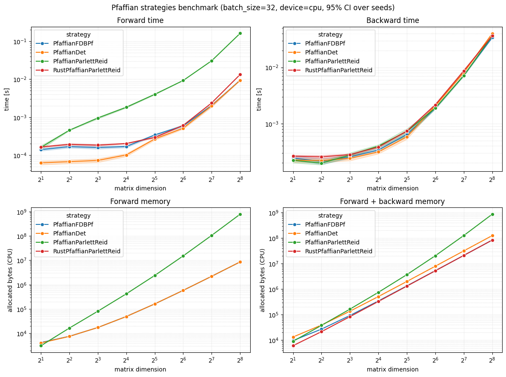

Benchmarking the Pfaffian strategies¶
This notebook benchmarks the available Pfaffian strategies in terms of time and memory for both the forward and backward passes.
Five strategies are compared:
PfaffianFDBPf: computes the Pfaffian fromsqrt(|det(A)|)with a custom analytic backward. Valid for any skew-symmetric matrix.PfaffianBlockDet: computes the Pfaffian from the determinant of the upper-right block, with a custom analytic backward.PfaffianDet: a reference baseline that also computespf = sqrt(|det(A)|)but differentiates straight throughdet/sqrtwith plain autograd (no custom backward), to expose the cost of naive autodiff against the analytic backward ofPfaffianFDBPf.PfaffianParlettReid: computes the signed Pfaffian via batched Parlett-Reid skew-tridiagonalization, with a custom analytic backward. Valid for any skew-symmetric matrix.RustPfaffianParlettReid: the same signed Parlett-Reid forward implemented in Rust (PyO3), with the analytic PyTorch backward. Available when the native extension is built.
Each strategy is invoked through Strategy.apply(matrix).
For each strategy and matrix size we report, averaged over 20 random seeds with 95% confidence intervals:
the median forward time,
the median backward time,
the forward peak memory,
the forward + backward peak memory.
Validity note¶
PfaffianBlockDet’s forward only returns the true Pfaffian for block-antidiagonal skew matrices of the form
$$ A = \begin{pmatrix} 0 & B \ -B^{T} & 0 \end{pmatrix}. $$
So when it is benchmarked, PfaffianBlockDet is fed block-antidiagonal inputs, the only shape on which it is valid. Every other strategy is valid on any skew-symmetric matrix, so those are benchmarked on general (dense) random skew-symmetric matrices — a representative, unstructured workload. Each strategy is therefore measured on an input it computes correctly.
import os
import sys
# The helper module lives next to this notebook; ensure it is importable both when
# running the notebook directly and when it is executed during the Sphinx docs build.
sys.path.insert(0, os.getcwd())
import torch
from _strategies_benchmark_helpers import benchmark_strategies, plot_results
from torch_pfaffian.strategies.pfaffian_det import PfaffianDet
from torch_pfaffian.strategies.pfaffian_fdbpf import PfaffianFDBPf
from torch_pfaffian.strategies.pfaffian_parlett_reid import PfaffianParlettReid
try:
from torch_pfaffian.strategies.pfaffian_rust_parlett_reid import RustPfaffianParlettReid
except ImportError:
RustPfaffianParlettReid = None
strategies = [
PfaffianFDBPf,
# PfaffianBlockDet,
PfaffianDet,
PfaffianParlettReid,
]
if RustPfaffianParlettReid is not None:
strategies.append(RustPfaffianParlettReid)
device = "cuda" if torch.cuda.is_available() else "cpu"
print(f"Running benchmarks on device: {device}")
Running benchmarks on device: cpu
/home/runner/work/TorchPfaffian/TorchPfaffian/.venv/lib/python3.11/site-packages/tqdm/auto.py:21: TqdmWarning: IProgress not found. Please update jupyter and ipywidgets. See https://ipywidgets.readthedocs.io/en/stable/user_install.html
from .autonotebook import tqdm as notebook_tqdm
Running the benchmark¶
The benchmarking and plotting logic lives in _strategies_benchmark_helpers.py to keep this notebook focused on the narrative. benchmark_strategies sweeps the matrix dimension n and, for every strategy, measures each metric once per seed across n_seeds seeds, returning the across-seed mean and the half-width of the 95% confidence interval.
sizes_n = [2, 4, 8, 16, 32, 64, 128, 256]
batch_size = 32
n_seeds = 20
results = benchmark_strategies(strategies, sizes_n, batch_size, device=device, n_seeds=n_seeds)
results
Benchmarking strategies: 0%| | 0/640 [00:00<?, ?it/s]
Benchmarking PfaffianFDBPf (n: 2 | seed: 0 ): 0%| | 0/640 [00:00<?, ?it/s]
/home/runner/work/TorchPfaffian/TorchPfaffian/.venv/lib/python3.11/site-packages/torch/profiler/profiler.py:217: UserWarning: Warning: Profiler clears events at the end of each cycle.Only events from the current cycle will be reported.To keep events across cycles, set acc_events=True.
_warn_once(
Benchmarking PfaffianFDBPf (n: 2 | seed: 0 ): 0%| | 1/640 [00:03<38:25, 3.61s/it]
Benchmarking PfaffianDet (n: 2 | seed: 0 ): 0%| | 1/640 [00:03<38:25, 3.61s/it]
Benchmarking PfaffianParlettReid (n: 2 | seed: 0 ): 0%| | 2/640 [00:03<38:22, 3.61s/it]
Benchmarking RustPfaffianParlettReid (n: 2 | seed: 0 ): 0%| | 3/640 [00:03<38:18, 3.61s/it]
Benchmarking PfaffianFDBPf (n: 2 | seed: 1 ): 1%| | 4/640 [00:03<38:15, 3.61s/it]
Benchmarking PfaffianDet (n: 2 | seed: 1 ): 1%| | 5/640 [00:03<38:11, 3.61s/it]
Benchmarking PfaffianDet (n: 2 | seed: 1 ): 1%| | 6/640 [00:03<04:52, 2.17it/s]
Benchmarking PfaffianParlettReid (n: 2 | seed: 1 ): 1%| | 6/640 [00:03<04:52, 2.17it/s]
Benchmarking RustPfaffianParlettReid (n: 2 | seed: 1 ): 1%| | 7/640 [00:03<04:51, 2.17it/s]
Benchmarking PfaffianFDBPf (n: 2 | seed: 2 ): 1%|▏ | 8/640 [00:03<04:51, 2.17it/s]
Benchmarking PfaffianDet (n: 2 | seed: 2 ): 1%|▏ | 9/640 [00:03<04:50, 2.17it/s]
Benchmarking PfaffianParlettReid (n: 2 | seed: 2 ): 2%|▏ | 10/640 [00:03<04:50, 2.17it/s]
Benchmarking RustPfaffianParlettReid (n: 2 | seed: 2 ): 2%|▏ | 11/640 [00:03<04:49, 2.17it/s]
Benchmarking RustPfaffianParlettReid (n: 2 | seed: 2 ): 2%|▏ | 12/640 [00:03<02:02, 5.12it/s]
Benchmarking PfaffianFDBPf (n: 2 | seed: 3 ): 2%|▏ | 12/640 [00:03<02:02, 5.12it/s]
Benchmarking PfaffianDet (n: 2 | seed: 3 ): 2%|▏ | 13/640 [00:03<02:02, 5.12it/s]
Benchmarking PfaffianParlettReid (n: 2 | seed: 3 ): 2%|▏ | 14/640 [00:03<02:02, 5.12it/s]
Benchmarking RustPfaffianParlettReid (n: 2 | seed: 3 ): 2%|▏ | 15/640 [00:03<02:01, 5.12it/s]
Benchmarking PfaffianFDBPf (n: 2 | seed: 4 ): 2%|▎ | 16/640 [00:03<02:01, 5.12it/s]
Benchmarking PfaffianFDBPf (n: 2 | seed: 4 ): 3%|▎ | 17/640 [00:03<01:16, 8.15it/s]
Benchmarking PfaffianDet (n: 2 | seed: 4 ): 3%|▎ | 17/640 [00:03<01:16, 8.15it/s]
Benchmarking PfaffianParlettReid (n: 2 | seed: 4 ): 3%|▎ | 18/640 [00:03<01:16, 8.15it/s]
Benchmarking RustPfaffianParlettReid (n: 2 | seed: 4 ): 3%|▎ | 19/640 [00:03<01:16, 8.15it/s]
Benchmarking PfaffianFDBPf (n: 2 | seed: 5 ): 3%|▎ | 20/640 [00:03<01:16, 8.15it/s]
Benchmarking PfaffianDet (n: 2 | seed: 5 ): 3%|▎ | 21/640 [00:04<01:15, 8.15it/s]
Benchmarking PfaffianParlettReid (n: 2 | seed: 5 ): 3%|▎ | 22/640 [00:04<01:15, 8.15it/s]
Benchmarking PfaffianParlettReid (n: 2 | seed: 5 ): 4%|▎ | 23/640 [00:04<00:49, 12.54it/s]
Benchmarking RustPfaffianParlettReid (n: 2 | seed: 5 ): 4%|▎ | 23/640 [00:04<00:49, 12.54it/s]
Benchmarking PfaffianFDBPf (n: 2 | seed: 6 ): 4%|▍ | 24/640 [00:04<00:49, 12.54it/s]
Benchmarking PfaffianDet (n: 2 | seed: 6 ): 4%|▍ | 25/640 [00:04<00:49, 12.54it/s]
Benchmarking PfaffianParlettReid (n: 2 | seed: 6 ): 4%|▍ | 26/640 [00:04<00:48, 12.54it/s]
Benchmarking RustPfaffianParlettReid (n: 2 | seed: 6 ): 4%|▍ | 27/640 [00:04<00:48, 12.54it/s]
Benchmarking PfaffianFDBPf (n: 2 | seed: 7 ): 4%|▍ | 28/640 [00:04<00:48, 12.54it/s]
Benchmarking PfaffianFDBPf (n: 2 | seed: 7 ): 5%|▍ | 29/640 [00:04<00:35, 17.35it/s]
Benchmarking PfaffianDet (n: 2 | seed: 7 ): 5%|▍ | 29/640 [00:04<00:35, 17.35it/s]
Benchmarking PfaffianParlettReid (n: 2 | seed: 7 ): 5%|▍ | 30/640 [00:04<00:35, 17.35it/s]
Benchmarking RustPfaffianParlettReid (n: 2 | seed: 7 ): 5%|▍ | 31/640 [00:04<00:35, 17.35it/s]
Benchmarking PfaffianFDBPf (n: 2 | seed: 8 ): 5%|▌ | 32/640 [00:04<00:35, 17.35it/s]
Benchmarking PfaffianDet (n: 2 | seed: 8 ): 5%|▌ | 33/640 [00:04<00:34, 17.35it/s]
Benchmarking PfaffianDet (n: 2 | seed: 8 ): 5%|▌ | 34/640 [00:04<00:28, 21.62it/s]
Benchmarking PfaffianParlettReid (n: 2 | seed: 8 ): 5%|▌ | 34/640 [00:04<00:28, 21.62it/s]
Benchmarking RustPfaffianParlettReid (n: 2 | seed: 8 ): 5%|▌ | 35/640 [00:04<00:27, 21.62it/s]
Benchmarking PfaffianFDBPf (n: 2 | seed: 9 ): 6%|▌ | 36/640 [00:04<00:27, 21.62it/s]
Benchmarking PfaffianDet (n: 2 | seed: 9 ): 6%|▌ | 37/640 [00:04<00:27, 21.62it/s]
Benchmarking PfaffianParlettReid (n: 2 | seed: 9 ): 6%|▌ | 38/640 [00:04<00:27, 21.62it/s]
Benchmarking RustPfaffianParlettReid (n: 2 | seed: 9 ): 6%|▌ | 39/640 [00:04<00:27, 21.62it/s]
Benchmarking RustPfaffianParlettReid (n: 2 | seed: 9 ): 6%|▋ | 40/640 [00:04<00:21, 27.37it/s]
Benchmarking PfaffianFDBPf (n: 2 | seed: 10 ): 6%|▋ | 40/640 [00:04<00:21, 27.37it/s]
Benchmarking PfaffianDet (n: 2 | seed: 10 ): 6%|▋ | 41/640 [00:04<00:21, 27.37it/s]
Benchmarking PfaffianParlettReid (n: 2 | seed: 10 ): 7%|▋ | 42/640 [00:04<00:21, 27.37it/s]
Benchmarking RustPfaffianParlettReid (n: 2 | seed: 10 ): 7%|▋ | 43/640 [00:04<00:21, 27.37it/s]
Benchmarking PfaffianFDBPf (n: 2 | seed: 11 ): 7%|▋ | 44/640 [00:04<00:21, 27.37it/s]
Benchmarking PfaffianDet (n: 2 | seed: 11 ): 7%|▋ | 45/640 [00:04<00:21, 27.37it/s]
Benchmarking PfaffianDet (n: 2 | seed: 11 ): 7%|▋ | 46/640 [00:04<00:18, 32.50it/s]
Benchmarking PfaffianParlettReid (n: 2 | seed: 11 ): 7%|▋ | 46/640 [00:04<00:18, 32.50it/s]
Benchmarking RustPfaffianParlettReid (n: 2 | seed: 11 ): 7%|▋ | 47/640 [00:04<00:18, 32.50it/s]
Benchmarking PfaffianFDBPf (n: 2 | seed: 12 ): 8%|▊ | 48/640 [00:04<00:18, 32.50it/s]
Benchmarking PfaffianDet (n: 2 | seed: 12 ): 8%|▊ | 49/640 [00:04<00:18, 32.50it/s]
Benchmarking PfaffianParlettReid (n: 2 | seed: 12 ): 8%|▊ | 50/640 [00:04<00:18, 32.50it/s]
Benchmarking RustPfaffianParlettReid (n: 2 | seed: 12 ): 8%|▊ | 51/640 [00:04<00:18, 32.50it/s]
Benchmarking RustPfaffianParlettReid (n: 2 | seed: 12 ): 8%|▊ | 52/640 [00:04<00:16, 36.00it/s]
Benchmarking PfaffianFDBPf (n: 2 | seed: 13 ): 8%|▊ | 52/640 [00:04<00:16, 36.00it/s]
Benchmarking PfaffianDet (n: 2 | seed: 13 ): 8%|▊ | 53/640 [00:04<00:16, 36.00it/s]
Benchmarking PfaffianParlettReid (n: 2 | seed: 13 ): 8%|▊ | 54/640 [00:04<00:16, 36.00it/s]
Benchmarking RustPfaffianParlettReid (n: 2 | seed: 13 ): 9%|▊ | 55/640 [00:04<00:16, 36.00it/s]
Benchmarking PfaffianFDBPf (n: 2 | seed: 14 ): 9%|▉ | 56/640 [00:04<00:16, 36.00it/s]
Benchmarking PfaffianDet (n: 2 | seed: 14 ): 9%|▉ | 57/640 [00:04<00:16, 36.00it/s]
Benchmarking PfaffianDet (n: 2 | seed: 14 ): 9%|▉ | 58/640 [00:04<00:14, 40.24it/s]
Benchmarking PfaffianParlettReid (n: 2 | seed: 14 ): 9%|▉ | 58/640 [00:04<00:14, 40.24it/s]
Benchmarking RustPfaffianParlettReid (n: 2 | seed: 14 ): 9%|▉ | 59/640 [00:04<00:14, 40.24it/s]
Benchmarking PfaffianFDBPf (n: 2 | seed: 15 ): 9%|▉ | 60/640 [00:04<00:14, 40.24it/s]
Benchmarking PfaffianDet (n: 2 | seed: 15 ): 10%|▉ | 61/640 [00:04<00:14, 40.24it/s]
Benchmarking PfaffianParlettReid (n: 2 | seed: 15 ): 10%|▉ | 62/640 [00:04<00:14, 40.24it/s]
Benchmarking RustPfaffianParlettReid (n: 2 | seed: 15 ): 10%|▉ | 63/640 [00:04<00:14, 40.24it/s]
Benchmarking RustPfaffianParlettReid (n: 2 | seed: 15 ): 10%|█ | 64/640 [00:04<00:13, 41.99it/s]
Benchmarking PfaffianFDBPf (n: 2 | seed: 16 ): 10%|█ | 64/640 [00:04<00:13, 41.99it/s]
Benchmarking PfaffianDet (n: 2 | seed: 16 ): 10%|█ | 65/640 [00:04<00:13, 41.99it/s]
Benchmarking PfaffianParlettReid (n: 2 | seed: 16 ): 10%|█ | 66/640 [00:04<00:13, 41.99it/s]
Benchmarking RustPfaffianParlettReid (n: 2 | seed: 16 ): 10%|█ | 67/640 [00:04<00:13, 41.99it/s]
Benchmarking PfaffianFDBPf (n: 2 | seed: 17 ): 11%|█ | 68/640 [00:04<00:13, 41.99it/s]
Benchmarking PfaffianFDBPf (n: 2 | seed: 17 ): 11%|█ | 69/640 [00:04<00:13, 43.45it/s]
Benchmarking PfaffianDet (n: 2 | seed: 17 ): 11%|█ | 69/640 [00:04<00:13, 43.45it/s]
Benchmarking PfaffianParlettReid (n: 2 | seed: 17 ): 11%|█ | 70/640 [00:04<00:13, 43.45it/s]
Benchmarking RustPfaffianParlettReid (n: 2 | seed: 17 ): 11%|█ | 71/640 [00:05<00:13, 43.45it/s]
Benchmarking PfaffianFDBPf (n: 2 | seed: 18 ): 11%|█▏ | 72/640 [00:05<00:13, 43.45it/s]
Benchmarking PfaffianDet (n: 2 | seed: 18 ): 11%|█▏ | 73/640 [00:05<00:13, 43.45it/s]
Benchmarking PfaffianParlettReid (n: 2 | seed: 18 ): 12%|█▏ | 74/640 [00:05<00:13, 43.45it/s]
Benchmarking PfaffianParlettReid (n: 2 | seed: 18 ): 12%|█▏ | 75/640 [00:05<00:12, 46.58it/s]
Benchmarking RustPfaffianParlettReid (n: 2 | seed: 18 ): 12%|█▏ | 75/640 [00:05<00:12, 46.58it/s]
Benchmarking PfaffianFDBPf (n: 2 | seed: 19 ): 12%|█▏ | 76/640 [00:05<00:12, 46.58it/s]
Benchmarking PfaffianDet (n: 2 | seed: 19 ): 12%|█▏ | 77/640 [00:05<00:12, 46.58it/s]
Benchmarking PfaffianParlettReid (n: 2 | seed: 19 ): 12%|█▏ | 78/640 [00:05<00:12, 46.58it/s]
Benchmarking RustPfaffianParlettReid (n: 2 | seed: 19 ): 12%|█▏ | 79/640 [00:05<00:12, 46.58it/s]
Benchmarking PfaffianFDBPf (n: 4 | seed: 0 ): 12%|█▎ | 80/640 [00:05<00:12, 46.58it/s]
Benchmarking PfaffianFDBPf (n: 4 | seed: 0 ): 13%|█▎ | 81/640 [00:05<00:11, 48.03it/s]
Benchmarking PfaffianDet (n: 4 | seed: 0 ): 13%|█▎ | 81/640 [00:05<00:11, 48.03it/s]
Benchmarking PfaffianParlettReid (n: 4 | seed: 0 ): 13%|█▎ | 82/640 [00:05<00:11, 48.03it/s]
Benchmarking RustPfaffianParlettReid (n: 4 | seed: 0 ): 13%|█▎ | 83/640 [00:05<00:11, 48.03it/s]
Benchmarking PfaffianFDBPf (n: 4 | seed: 1 ): 13%|█▎ | 84/640 [00:05<00:11, 48.03it/s]
Benchmarking PfaffianDet (n: 4 | seed: 1 ): 13%|█▎ | 85/640 [00:05<00:11, 48.03it/s]
Benchmarking PfaffianParlettReid (n: 4 | seed: 1 ): 13%|█▎ | 86/640 [00:05<00:11, 48.03it/s]
Benchmarking PfaffianParlettReid (n: 4 | seed: 1 ): 14%|█▎ | 87/640 [00:05<00:12, 43.53it/s]
Benchmarking RustPfaffianParlettReid (n: 4 | seed: 1 ): 14%|█▎ | 87/640 [00:05<00:12, 43.53it/s]
Benchmarking PfaffianFDBPf (n: 4 | seed: 2 ): 14%|█▍ | 88/640 [00:05<00:12, 43.53it/s]
Benchmarking PfaffianDet (n: 4 | seed: 2 ): 14%|█▍ | 89/640 [00:05<00:12, 43.53it/s]
Benchmarking PfaffianParlettReid (n: 4 | seed: 2 ): 14%|█▍ | 90/640 [00:05<00:12, 43.53it/s]
Benchmarking RustPfaffianParlettReid (n: 4 | seed: 2 ): 14%|█▍ | 91/640 [00:05<00:12, 43.53it/s]
Benchmarking RustPfaffianParlettReid (n: 4 | seed: 2 ): 14%|█▍ | 92/640 [00:05<00:12, 43.00it/s]
Benchmarking PfaffianFDBPf (n: 4 | seed: 3 ): 14%|█▍ | 92/640 [00:05<00:12, 43.00it/s]
Benchmarking PfaffianDet (n: 4 | seed: 3 ): 15%|█▍ | 93/640 [00:05<00:12, 43.00it/s]
Benchmarking PfaffianParlettReid (n: 4 | seed: 3 ): 15%|█▍ | 94/640 [00:05<00:12, 43.00it/s]
Benchmarking RustPfaffianParlettReid (n: 4 | seed: 3 ): 15%|█▍ | 95/640 [00:05<00:12, 43.00it/s]
Benchmarking PfaffianFDBPf (n: 4 | seed: 4 ): 15%|█▌ | 96/640 [00:05<00:12, 43.00it/s]
Benchmarking PfaffianFDBPf (n: 4 | seed: 4 ): 15%|█▌ | 97/640 [00:05<00:17, 30.28it/s]
Benchmarking PfaffianDet (n: 4 | seed: 4 ): 15%|█▌ | 97/640 [00:05<00:17, 30.28it/s]
Benchmarking PfaffianParlettReid (n: 4 | seed: 4 ): 15%|█▌ | 98/640 [00:05<00:17, 30.28it/s]
Benchmarking RustPfaffianParlettReid (n: 4 | seed: 4 ): 15%|█▌ | 99/640 [00:05<00:17, 30.28it/s]
Benchmarking PfaffianFDBPf (n: 4 | seed: 5 ): 16%|█▌ | 100/640 [00:05<00:17, 30.28it/s]
Benchmarking PfaffianFDBPf (n: 4 | seed: 5 ): 16%|█▌ | 101/640 [00:05<00:16, 32.08it/s]
Benchmarking PfaffianDet (n: 4 | seed: 5 ): 16%|█▌ | 101/640 [00:05<00:16, 32.08it/s]
Benchmarking PfaffianParlettReid (n: 4 | seed: 5 ): 16%|█▌ | 102/640 [00:05<00:16, 32.08it/s]
Benchmarking RustPfaffianParlettReid (n: 4 | seed: 5 ): 16%|█▌ | 103/640 [00:05<00:16, 32.08it/s]
Benchmarking PfaffianFDBPf (n: 4 | seed: 6 ): 16%|█▋ | 104/640 [00:05<00:16, 32.08it/s]
Benchmarking PfaffianDet (n: 4 | seed: 6 ): 16%|█▋ | 105/640 [00:05<00:16, 32.08it/s]
Benchmarking PfaffianDet (n: 4 | seed: 6 ): 17%|█▋ | 106/640 [00:05<00:15, 34.49it/s]
Benchmarking PfaffianParlettReid (n: 4 | seed: 6 ): 17%|█▋ | 106/640 [00:05<00:15, 34.49it/s]
Benchmarking RustPfaffianParlettReid (n: 4 | seed: 6 ): 17%|█▋ | 107/640 [00:06<00:15, 34.49it/s]
Benchmarking PfaffianFDBPf (n: 4 | seed: 7 ): 17%|█▋ | 108/640 [00:06<00:15, 34.49it/s]
Benchmarking PfaffianDet (n: 4 | seed: 7 ): 17%|█▋ | 109/640 [00:06<00:15, 34.49it/s]
Benchmarking PfaffianDet (n: 4 | seed: 7 ): 17%|█▋ | 110/640 [00:06<00:14, 35.44it/s]
Benchmarking PfaffianParlettReid (n: 4 | seed: 7 ): 17%|█▋ | 110/640 [00:06<00:14, 35.44it/s]
Benchmarking RustPfaffianParlettReid (n: 4 | seed: 7 ): 17%|█▋ | 111/640 [00:06<00:14, 35.44it/s]
Benchmarking PfaffianFDBPf (n: 4 | seed: 8 ): 18%|█▊ | 112/640 [00:06<00:14, 35.44it/s]
Benchmarking PfaffianDet (n: 4 | seed: 8 ): 18%|█▊ | 113/640 [00:06<00:14, 35.44it/s]
Benchmarking PfaffianParlettReid (n: 4 | seed: 8 ): 18%|█▊ | 114/640 [00:06<00:14, 35.44it/s]
Benchmarking PfaffianParlettReid (n: 4 | seed: 8 ): 18%|█▊ | 115/640 [00:06<00:14, 35.90it/s]
Benchmarking RustPfaffianParlettReid (n: 4 | seed: 8 ): 18%|█▊ | 115/640 [00:06<00:14, 35.90it/s]
Benchmarking PfaffianFDBPf (n: 4 | seed: 9 ): 18%|█▊ | 116/640 [00:06<00:14, 35.90it/s]
Benchmarking PfaffianDet (n: 4 | seed: 9 ): 18%|█▊ | 117/640 [00:06<00:14, 35.90it/s]
Benchmarking PfaffianParlettReid (n: 4 | seed: 9 ): 18%|█▊ | 118/640 [00:06<00:14, 35.90it/s]
Benchmarking PfaffianParlettReid (n: 4 | seed: 9 ): 19%|█▊ | 119/640 [00:06<00:14, 36.61it/s]
Benchmarking RustPfaffianParlettReid (n: 4 | seed: 9 ): 19%|█▊ | 119/640 [00:06<00:14, 36.61it/s]
Benchmarking PfaffianFDBPf (n: 4 | seed: 10 ): 19%|█▉ | 120/640 [00:06<00:14, 36.61it/s]
Benchmarking PfaffianDet (n: 4 | seed: 10 ): 19%|█▉ | 121/640 [00:06<00:14, 36.61it/s]
Benchmarking PfaffianParlettReid (n: 4 | seed: 10 ): 19%|█▉ | 122/640 [00:06<00:14, 36.61it/s]
Benchmarking PfaffianParlettReid (n: 4 | seed: 10 ): 19%|█▉ | 123/640 [00:06<00:14, 36.43it/s]
Benchmarking RustPfaffianParlettReid (n: 4 | seed: 10 ): 19%|█▉ | 123/640 [00:06<00:14, 36.43it/s]
Benchmarking PfaffianFDBPf (n: 4 | seed: 11 ): 19%|█▉ | 124/640 [00:06<00:14, 36.43it/s]
Benchmarking PfaffianDet (n: 4 | seed: 11 ): 20%|█▉ | 125/640 [00:06<00:14, 36.43it/s]
Benchmarking PfaffianParlettReid (n: 4 | seed: 11 ): 20%|█▉ | 126/640 [00:06<00:14, 36.43it/s]
Benchmarking PfaffianParlettReid (n: 4 | seed: 11 ): 20%|█▉ | 127/640 [00:06<00:13, 37.15it/s]
Benchmarking RustPfaffianParlettReid (n: 4 | seed: 11 ): 20%|█▉ | 127/640 [00:06<00:13, 37.15it/s]
Benchmarking PfaffianFDBPf (n: 4 | seed: 12 ): 20%|██ | 128/640 [00:06<00:13, 37.15it/s]
Benchmarking PfaffianDet (n: 4 | seed: 12 ): 20%|██ | 129/640 [00:06<00:13, 37.15it/s]
Benchmarking PfaffianParlettReid (n: 4 | seed: 12 ): 20%|██ | 130/640 [00:06<00:13, 37.15it/s]
Benchmarking PfaffianParlettReid (n: 4 | seed: 12 ): 20%|██ | 131/640 [00:06<00:13, 37.72it/s]
Benchmarking RustPfaffianParlettReid (n: 4 | seed: 12 ): 20%|██ | 131/640 [00:06<00:13, 37.72it/s]
Benchmarking PfaffianFDBPf (n: 4 | seed: 13 ): 21%|██ | 132/640 [00:06<00:13, 37.72it/s]
Benchmarking PfaffianDet (n: 4 | seed: 13 ): 21%|██ | 133/640 [00:06<00:13, 37.72it/s]
Benchmarking PfaffianParlettReid (n: 4 | seed: 13 ): 21%|██ | 134/640 [00:06<00:13, 37.72it/s]
Benchmarking PfaffianParlettReid (n: 4 | seed: 13 ): 21%|██ | 135/640 [00:06<00:13, 37.37it/s]
Benchmarking RustPfaffianParlettReid (n: 4 | seed: 13 ): 21%|██ | 135/640 [00:06<00:13, 37.37it/s]
Benchmarking PfaffianFDBPf (n: 4 | seed: 14 ): 21%|██▏ | 136/640 [00:06<00:13, 37.37it/s]
Benchmarking PfaffianDet (n: 4 | seed: 14 ): 21%|██▏ | 137/640 [00:06<00:13, 37.37it/s]
Benchmarking PfaffianParlettReid (n: 4 | seed: 14 ): 22%|██▏ | 138/640 [00:06<00:13, 37.37it/s]
Benchmarking PfaffianParlettReid (n: 4 | seed: 14 ): 22%|██▏ | 139/640 [00:06<00:13, 36.88it/s]
Benchmarking RustPfaffianParlettReid (n: 4 | seed: 14 ): 22%|██▏ | 139/640 [00:06<00:13, 36.88it/s]
Benchmarking PfaffianFDBPf (n: 4 | seed: 15 ): 22%|██▏ | 140/640 [00:06<00:13, 36.88it/s]
Benchmarking PfaffianDet (n: 4 | seed: 15 ): 22%|██▏ | 141/640 [00:06<00:13, 36.88it/s]
Benchmarking PfaffianParlettReid (n: 4 | seed: 15 ): 22%|██▏ | 142/640 [00:06<00:13, 36.88it/s]
Benchmarking PfaffianParlettReid (n: 4 | seed: 15 ): 22%|██▏ | 143/640 [00:06<00:13, 37.55it/s]
Benchmarking RustPfaffianParlettReid (n: 4 | seed: 15 ): 22%|██▏ | 143/640 [00:06<00:13, 37.55it/s]
Benchmarking PfaffianFDBPf (n: 4 | seed: 16 ): 22%|██▎ | 144/640 [00:06<00:13, 37.55it/s]
Benchmarking PfaffianDet (n: 4 | seed: 16 ): 23%|██▎ | 145/640 [00:07<00:13, 37.55it/s]
Benchmarking PfaffianParlettReid (n: 4 | seed: 16 ): 23%|██▎ | 146/640 [00:07<00:13, 37.55it/s]
Benchmarking PfaffianParlettReid (n: 4 | seed: 16 ): 23%|██▎ | 147/640 [00:07<00:12, 38.16it/s]
Benchmarking RustPfaffianParlettReid (n: 4 | seed: 16 ): 23%|██▎ | 147/640 [00:07<00:12, 38.16it/s]
Benchmarking PfaffianFDBPf (n: 4 | seed: 17 ): 23%|██▎ | 148/640 [00:07<00:12, 38.16it/s]
Benchmarking PfaffianDet (n: 4 | seed: 17 ): 23%|██▎ | 149/640 [00:07<00:12, 38.16it/s]
Benchmarking PfaffianParlettReid (n: 4 | seed: 17 ): 23%|██▎ | 150/640 [00:07<00:12, 38.16it/s]
Benchmarking PfaffianParlettReid (n: 4 | seed: 17 ): 24%|██▎ | 151/640 [00:07<00:12, 38.45it/s]
Benchmarking RustPfaffianParlettReid (n: 4 | seed: 17 ): 24%|██▎ | 151/640 [00:07<00:12, 38.45it/s]
Benchmarking PfaffianFDBPf (n: 4 | seed: 18 ): 24%|██▍ | 152/640 [00:07<00:12, 38.45it/s]
Benchmarking PfaffianDet (n: 4 | seed: 18 ): 24%|██▍ | 153/640 [00:07<00:12, 38.45it/s]
Benchmarking PfaffianParlettReid (n: 4 | seed: 18 ): 24%|██▍ | 154/640 [00:07<00:12, 38.45it/s]
Benchmarking PfaffianParlettReid (n: 4 | seed: 18 ): 24%|██▍ | 155/640 [00:07<00:12, 38.26it/s]
Benchmarking RustPfaffianParlettReid (n: 4 | seed: 18 ): 24%|██▍ | 155/640 [00:07<00:12, 38.26it/s]
Benchmarking PfaffianFDBPf (n: 4 | seed: 19 ): 24%|██▍ | 156/640 [00:07<00:12, 38.26it/s]
Benchmarking PfaffianDet (n: 4 | seed: 19 ): 25%|██▍ | 157/640 [00:07<00:12, 38.26it/s]
Benchmarking PfaffianParlettReid (n: 4 | seed: 19 ): 25%|██▍ | 158/640 [00:07<00:12, 38.26it/s]
Benchmarking PfaffianParlettReid (n: 4 | seed: 19 ): 25%|██▍ | 159/640 [00:07<00:13, 36.91it/s]
Benchmarking RustPfaffianParlettReid (n: 4 | seed: 19 ): 25%|██▍ | 159/640 [00:07<00:13, 36.91it/s]
Benchmarking PfaffianFDBPf (n: 8 | seed: 0 ): 25%|██▌ | 160/640 [00:07<00:13, 36.91it/s]
Benchmarking PfaffianDet (n: 8 | seed: 0 ): 25%|██▌ | 161/640 [00:07<00:12, 36.91it/s]
Benchmarking PfaffianParlettReid (n: 8 | seed: 0 ): 25%|██▌ | 162/640 [00:07<00:12, 36.91it/s]
Benchmarking PfaffianParlettReid (n: 8 | seed: 0 ): 25%|██▌ | 163/640 [00:07<00:14, 33.98it/s]
Benchmarking RustPfaffianParlettReid (n: 8 | seed: 0 ): 25%|██▌ | 163/640 [00:07<00:14, 33.98it/s]
Benchmarking PfaffianFDBPf (n: 8 | seed: 1 ): 26%|██▌ | 164/640 [00:07<00:14, 33.98it/s]
Benchmarking PfaffianDet (n: 8 | seed: 1 ): 26%|██▌ | 165/640 [00:07<00:13, 33.98it/s]
Benchmarking PfaffianParlettReid (n: 8 | seed: 1 ): 26%|██▌ | 166/640 [00:07<00:13, 33.98it/s]
Benchmarking PfaffianParlettReid (n: 8 | seed: 1 ): 26%|██▌ | 167/640 [00:07<00:14, 32.62it/s]
Benchmarking RustPfaffianParlettReid (n: 8 | seed: 1 ): 26%|██▌ | 167/640 [00:07<00:14, 32.62it/s]
Benchmarking PfaffianFDBPf (n: 8 | seed: 2 ): 26%|██▋ | 168/640 [00:07<00:14, 32.62it/s]
Benchmarking PfaffianDet (n: 8 | seed: 2 ): 26%|██▋ | 169/640 [00:07<00:14, 32.62it/s]
Benchmarking PfaffianParlettReid (n: 8 | seed: 2 ): 27%|██▋ | 170/640 [00:07<00:14, 32.62it/s]
Benchmarking PfaffianParlettReid (n: 8 | seed: 2 ): 27%|██▋ | 171/640 [00:07<00:14, 31.38it/s]
Benchmarking RustPfaffianParlettReid (n: 8 | seed: 2 ): 27%|██▋ | 171/640 [00:07<00:14, 31.38it/s]
Benchmarking PfaffianFDBPf (n: 8 | seed: 3 ): 27%|██▋ | 172/640 [00:07<00:14, 31.38it/s]
Benchmarking PfaffianDet (n: 8 | seed: 3 ): 27%|██▋ | 173/640 [00:07<00:14, 31.38it/s]
Benchmarking PfaffianParlettReid (n: 8 | seed: 3 ): 27%|██▋ | 174/640 [00:07<00:14, 31.38it/s]
Benchmarking PfaffianParlettReid (n: 8 | seed: 3 ): 27%|██▋ | 175/640 [00:07<00:15, 30.96it/s]
Benchmarking RustPfaffianParlettReid (n: 8 | seed: 3 ): 27%|██▋ | 175/640 [00:07<00:15, 30.96it/s]
Benchmarking PfaffianFDBPf (n: 8 | seed: 4 ): 28%|██▊ | 176/640 [00:07<00:14, 30.96it/s]
Benchmarking PfaffianDet (n: 8 | seed: 4 ): 28%|██▊ | 177/640 [00:07<00:14, 30.96it/s]
Benchmarking PfaffianParlettReid (n: 8 | seed: 4 ): 28%|██▊ | 178/640 [00:08<00:14, 30.96it/s]
Benchmarking PfaffianParlettReid (n: 8 | seed: 4 ): 28%|██▊ | 179/640 [00:08<00:15, 29.74it/s]
Benchmarking RustPfaffianParlettReid (n: 8 | seed: 4 ): 28%|██▊ | 179/640 [00:08<00:15, 29.74it/s]
Benchmarking PfaffianFDBPf (n: 8 | seed: 5 ): 28%|██▊ | 180/640 [00:08<00:15, 29.74it/s]
Benchmarking PfaffianDet (n: 8 | seed: 5 ): 28%|██▊ | 181/640 [00:08<00:15, 29.74it/s]
Benchmarking PfaffianParlettReid (n: 8 | seed: 5 ): 28%|██▊ | 182/640 [00:08<00:15, 29.74it/s]
Benchmarking PfaffianParlettReid (n: 8 | seed: 5 ): 29%|██▊ | 183/640 [00:08<00:15, 29.79it/s]
Benchmarking RustPfaffianParlettReid (n: 8 | seed: 5 ): 29%|██▊ | 183/640 [00:08<00:15, 29.79it/s]
Benchmarking PfaffianFDBPf (n: 8 | seed: 6 ): 29%|██▉ | 184/640 [00:08<00:15, 29.79it/s]
Benchmarking PfaffianDet (n: 8 | seed: 6 ): 29%|██▉ | 185/640 [00:08<00:15, 29.79it/s]
Benchmarking PfaffianParlettReid (n: 8 | seed: 6 ): 29%|██▉ | 186/640 [00:08<00:15, 29.79it/s]
Benchmarking PfaffianParlettReid (n: 8 | seed: 6 ): 29%|██▉ | 187/640 [00:08<00:23, 19.59it/s]
Benchmarking RustPfaffianParlettReid (n: 8 | seed: 6 ): 29%|██▉ | 187/640 [00:08<00:23, 19.59it/s]
Benchmarking PfaffianFDBPf (n: 8 | seed: 7 ): 29%|██▉ | 188/640 [00:08<00:23, 19.59it/s]
Benchmarking PfaffianDet (n: 8 | seed: 7 ): 30%|██▉ | 189/640 [00:08<00:23, 19.59it/s]
Benchmarking PfaffianParlettReid (n: 8 | seed: 7 ): 30%|██▉ | 190/640 [00:08<00:22, 19.59it/s]
Benchmarking PfaffianParlettReid (n: 8 | seed: 7 ): 30%|██▉ | 191/640 [00:08<00:20, 21.52it/s]
Benchmarking RustPfaffianParlettReid (n: 8 | seed: 7 ): 30%|██▉ | 191/640 [00:08<00:20, 21.52it/s]
Benchmarking PfaffianFDBPf (n: 8 | seed: 8 ): 30%|███ | 192/640 [00:08<00:20, 21.52it/s]
Benchmarking PfaffianDet (n: 8 | seed: 8 ): 30%|███ | 193/640 [00:08<00:20, 21.52it/s]
Benchmarking PfaffianParlettReid (n: 8 | seed: 8 ): 30%|███ | 194/640 [00:08<00:20, 21.52it/s]
Benchmarking PfaffianParlettReid (n: 8 | seed: 8 ): 30%|███ | 195/640 [00:08<00:19, 23.38it/s]
Benchmarking RustPfaffianParlettReid (n: 8 | seed: 8 ): 30%|███ | 195/640 [00:08<00:19, 23.38it/s]
Benchmarking PfaffianFDBPf (n: 8 | seed: 9 ): 31%|███ | 196/640 [00:08<00:18, 23.38it/s]
Benchmarking PfaffianDet (n: 8 | seed: 9 ): 31%|███ | 197/640 [00:08<00:18, 23.38it/s]
Benchmarking PfaffianParlettReid (n: 8 | seed: 9 ): 31%|███ | 198/640 [00:08<00:18, 23.38it/s]
Benchmarking PfaffianParlettReid (n: 8 | seed: 9 ): 31%|███ | 199/640 [00:09<00:17, 24.90it/s]
Benchmarking RustPfaffianParlettReid (n: 8 | seed: 9 ): 31%|███ | 199/640 [00:09<00:17, 24.90it/s]
Benchmarking PfaffianFDBPf (n: 8 | seed: 10 ): 31%|███▏ | 200/640 [00:09<00:17, 24.90it/s]
Benchmarking PfaffianDet (n: 8 | seed: 10 ): 31%|███▏ | 201/640 [00:09<00:17, 24.90it/s]
Benchmarking PfaffianParlettReid (n: 8 | seed: 10 ): 32%|███▏ | 202/640 [00:09<00:17, 24.90it/s]
Benchmarking PfaffianParlettReid (n: 8 | seed: 10 ): 32%|███▏ | 203/640 [00:09<00:17, 25.67it/s]
Benchmarking RustPfaffianParlettReid (n: 8 | seed: 10 ): 32%|███▏ | 203/640 [00:09<00:17, 25.67it/s]
Benchmarking PfaffianFDBPf (n: 8 | seed: 11 ): 32%|███▏ | 204/640 [00:09<00:16, 25.67it/s]
Benchmarking PfaffianDet (n: 8 | seed: 11 ): 32%|███▏ | 205/640 [00:09<00:16, 25.67it/s]
Benchmarking PfaffianParlettReid (n: 8 | seed: 11 ): 32%|███▏ | 206/640 [00:09<00:16, 25.67it/s]
Benchmarking PfaffianParlettReid (n: 8 | seed: 11 ): 32%|███▏ | 207/640 [00:09<00:16, 26.45it/s]
Benchmarking RustPfaffianParlettReid (n: 8 | seed: 11 ): 32%|███▏ | 207/640 [00:09<00:16, 26.45it/s]
Benchmarking PfaffianFDBPf (n: 8 | seed: 12 ): 32%|███▎ | 208/640 [00:09<00:16, 26.45it/s]
Benchmarking PfaffianDet (n: 8 | seed: 12 ): 33%|███▎ | 209/640 [00:09<00:16, 26.45it/s]
Benchmarking PfaffianParlettReid (n: 8 | seed: 12 ): 33%|███▎ | 210/640 [00:09<00:16, 26.45it/s]
Benchmarking PfaffianParlettReid (n: 8 | seed: 12 ): 33%|███▎ | 211/640 [00:09<00:15, 27.26it/s]
Benchmarking RustPfaffianParlettReid (n: 8 | seed: 12 ): 33%|███▎ | 211/640 [00:09<00:15, 27.26it/s]
Benchmarking PfaffianFDBPf (n: 8 | seed: 13 ): 33%|███▎ | 212/640 [00:09<00:15, 27.26it/s]
Benchmarking PfaffianDet (n: 8 | seed: 13 ): 33%|███▎ | 213/640 [00:09<00:15, 27.26it/s]
Benchmarking PfaffianParlettReid (n: 8 | seed: 13 ): 33%|███▎ | 214/640 [00:09<00:15, 27.26it/s]
Benchmarking PfaffianParlettReid (n: 8 | seed: 13 ): 34%|███▎ | 215/640 [00:09<00:15, 27.94it/s]
Benchmarking RustPfaffianParlettReid (n: 8 | seed: 13 ): 34%|███▎ | 215/640 [00:09<00:15, 27.94it/s]
Benchmarking PfaffianFDBPf (n: 8 | seed: 14 ): 34%|███▍ | 216/640 [00:09<00:15, 27.94it/s]
Benchmarking PfaffianDet (n: 8 | seed: 14 ): 34%|███▍ | 217/640 [00:09<00:15, 27.94it/s]
Benchmarking PfaffianParlettReid (n: 8 | seed: 14 ): 34%|███▍ | 218/640 [00:09<00:15, 27.94it/s]
Benchmarking PfaffianParlettReid (n: 8 | seed: 14 ): 34%|███▍ | 219/640 [00:09<00:15, 27.88it/s]
Benchmarking RustPfaffianParlettReid (n: 8 | seed: 14 ): 34%|███▍ | 219/640 [00:09<00:15, 27.88it/s]
Benchmarking PfaffianFDBPf (n: 8 | seed: 15 ): 34%|███▍ | 220/640 [00:09<00:15, 27.88it/s]
Benchmarking PfaffianDet (n: 8 | seed: 15 ): 35%|███▍ | 221/640 [00:09<00:15, 27.88it/s]
Benchmarking PfaffianParlettReid (n: 8 | seed: 15 ): 35%|███▍ | 222/640 [00:09<00:14, 27.88it/s]
Benchmarking PfaffianParlettReid (n: 8 | seed: 15 ): 35%|███▍ | 223/640 [00:09<00:14, 28.25it/s]
Benchmarking RustPfaffianParlettReid (n: 8 | seed: 15 ): 35%|███▍ | 223/640 [00:09<00:14, 28.25it/s]
Benchmarking PfaffianFDBPf (n: 8 | seed: 16 ): 35%|███▌ | 224/640 [00:09<00:14, 28.25it/s]
Benchmarking PfaffianDet (n: 8 | seed: 16 ): 35%|███▌ | 225/640 [00:09<00:14, 28.25it/s]
Benchmarking PfaffianParlettReid (n: 8 | seed: 16 ): 35%|███▌ | 226/640 [00:09<00:14, 28.25it/s]
Benchmarking PfaffianParlettReid (n: 8 | seed: 16 ): 35%|███▌ | 227/640 [00:09<00:14, 27.71it/s]
Benchmarking RustPfaffianParlettReid (n: 8 | seed: 16 ): 35%|███▌ | 227/640 [00:09<00:14, 27.71it/s]
Benchmarking PfaffianFDBPf (n: 8 | seed: 17 ): 36%|███▌ | 228/640 [00:10<00:14, 27.71it/s]
Benchmarking PfaffianDet (n: 8 | seed: 17 ): 36%|███▌ | 229/640 [00:10<00:14, 27.71it/s]
Benchmarking PfaffianParlettReid (n: 8 | seed: 17 ): 36%|███▌ | 230/640 [00:10<00:14, 27.71it/s]
Benchmarking PfaffianParlettReid (n: 8 | seed: 17 ): 36%|███▌ | 231/640 [00:10<00:14, 27.87it/s]
Benchmarking RustPfaffianParlettReid (n: 8 | seed: 17 ): 36%|███▌ | 231/640 [00:10<00:14, 27.87it/s]
Benchmarking PfaffianFDBPf (n: 8 | seed: 18 ): 36%|███▋ | 232/640 [00:10<00:14, 27.87it/s]
Benchmarking PfaffianDet (n: 8 | seed: 18 ): 36%|███▋ | 233/640 [00:10<00:14, 27.87it/s]
Benchmarking PfaffianParlettReid (n: 8 | seed: 18 ): 37%|███▋ | 234/640 [00:10<00:14, 27.87it/s]
Benchmarking PfaffianParlettReid (n: 8 | seed: 18 ): 37%|███▋ | 235/640 [00:10<00:14, 28.24it/s]
Benchmarking RustPfaffianParlettReid (n: 8 | seed: 18 ): 37%|███▋ | 235/640 [00:10<00:14, 28.24it/s]
Benchmarking PfaffianFDBPf (n: 8 | seed: 19 ): 37%|███▋ | 236/640 [00:10<00:14, 28.24it/s]
Benchmarking PfaffianDet (n: 8 | seed: 19 ): 37%|███▋ | 237/640 [00:10<00:14, 28.24it/s]
Benchmarking PfaffianDet (n: 8 | seed: 19 ): 37%|███▋ | 238/640 [00:10<00:20, 19.57it/s]
Benchmarking PfaffianParlettReid (n: 8 | seed: 19 ): 37%|███▋ | 238/640 [00:10<00:20, 19.57it/s]
Benchmarking RustPfaffianParlettReid (n: 8 | seed: 19 ): 37%|███▋ | 239/640 [00:10<00:20, 19.57it/s]
Benchmarking PfaffianFDBPf (n: 16 | seed: 0 ): 38%|███▊ | 240/640 [00:10<00:20, 19.57it/s]
Benchmarking PfaffianFDBPf (n: 16 | seed: 0 ): 38%|███▊ | 241/640 [00:10<00:19, 20.88it/s]
Benchmarking PfaffianDet (n: 16 | seed: 0 ): 38%|███▊ | 241/640 [00:10<00:19, 20.88it/s]
Benchmarking PfaffianParlettReid (n: 16 | seed: 0 ): 38%|███▊ | 242/640 [00:10<00:19, 20.88it/s]
Benchmarking RustPfaffianParlettReid (n: 16 | seed: 0 ): 38%|███▊ | 243/640 [00:10<00:19, 20.88it/s]
Benchmarking RustPfaffianParlettReid (n: 16 | seed: 0 ): 38%|███▊ | 244/640 [00:10<00:21, 18.72it/s]
Benchmarking PfaffianFDBPf (n: 16 | seed: 1 ): 38%|███▊ | 244/640 [00:10<00:21, 18.72it/s]
Benchmarking PfaffianDet (n: 16 | seed: 1 ): 38%|███▊ | 245/640 [00:10<00:21, 18.72it/s]
Benchmarking PfaffianParlettReid (n: 16 | seed: 1 ): 38%|███▊ | 246/640 [00:10<00:21, 18.72it/s]
Benchmarking PfaffianParlettReid (n: 16 | seed: 1 ): 39%|███▊ | 247/640 [00:11<00:22, 17.77it/s]
Benchmarking RustPfaffianParlettReid (n: 16 | seed: 1 ): 39%|███▊ | 247/640 [00:11<00:22, 17.77it/s]
Benchmarking PfaffianFDBPf (n: 16 | seed: 2 ): 39%|███▉ | 248/640 [00:11<00:22, 17.77it/s]
Benchmarking PfaffianDet (n: 16 | seed: 2 ): 39%|███▉ | 249/640 [00:11<00:22, 17.77it/s]
Benchmarking PfaffianParlettReid (n: 16 | seed: 2 ): 39%|███▉ | 250/640 [00:11<00:21, 17.77it/s]
Benchmarking PfaffianParlettReid (n: 16 | seed: 2 ): 39%|███▉ | 251/640 [00:11<00:21, 18.19it/s]
Benchmarking RustPfaffianParlettReid (n: 16 | seed: 2 ): 39%|███▉ | 251/640 [00:11<00:21, 18.19it/s]
Benchmarking PfaffianFDBPf (n: 16 | seed: 3 ): 39%|███▉ | 252/640 [00:11<00:21, 18.19it/s]
Benchmarking PfaffianDet (n: 16 | seed: 3 ): 40%|███▉ | 253/640 [00:11<00:21, 18.19it/s]
Benchmarking PfaffianParlettReid (n: 16 | seed: 3 ): 40%|███▉ | 254/640 [00:11<00:21, 18.19it/s]
Benchmarking PfaffianParlettReid (n: 16 | seed: 3 ): 40%|███▉ | 255/640 [00:11<00:28, 13.71it/s]
Benchmarking RustPfaffianParlettReid (n: 16 | seed: 3 ): 40%|███▉ | 255/640 [00:11<00:28, 13.71it/s]
Benchmarking PfaffianFDBPf (n: 16 | seed: 4 ): 40%|████ | 256/640 [00:11<00:28, 13.71it/s]
Benchmarking PfaffianDet (n: 16 | seed: 4 ): 40%|████ | 257/640 [00:11<00:27, 13.71it/s]
Benchmarking PfaffianParlettReid (n: 16 | seed: 4 ): 40%|████ | 258/640 [00:11<00:27, 13.71it/s]
Benchmarking PfaffianParlettReid (n: 16 | seed: 4 ): 40%|████ | 259/640 [00:11<00:25, 14.89it/s]
Benchmarking RustPfaffianParlettReid (n: 16 | seed: 4 ): 40%|████ | 259/640 [00:11<00:25, 14.89it/s]
Benchmarking PfaffianFDBPf (n: 16 | seed: 5 ): 41%|████ | 260/640 [00:11<00:25, 14.89it/s]
Benchmarking PfaffianDet (n: 16 | seed: 5 ): 41%|████ | 261/640 [00:11<00:25, 14.89it/s]
Benchmarking PfaffianParlettReid (n: 16 | seed: 5 ): 41%|████ | 262/640 [00:12<00:25, 14.89it/s]
Benchmarking PfaffianParlettReid (n: 16 | seed: 5 ): 41%|████ | 263/640 [00:12<00:23, 15.83it/s]
Benchmarking RustPfaffianParlettReid (n: 16 | seed: 5 ): 41%|████ | 263/640 [00:12<00:23, 15.83it/s]
Benchmarking PfaffianFDBPf (n: 16 | seed: 6 ): 41%|████▏ | 264/640 [00:12<00:23, 15.83it/s]
Benchmarking PfaffianDet (n: 16 | seed: 6 ): 41%|████▏ | 265/640 [00:12<00:23, 15.83it/s]
Benchmarking PfaffianParlettReid (n: 16 | seed: 6 ): 42%|████▏ | 266/640 [00:12<00:23, 15.83it/s]
Benchmarking PfaffianParlettReid (n: 16 | seed: 6 ): 42%|████▏ | 267/640 [00:12<00:22, 16.58it/s]
Benchmarking RustPfaffianParlettReid (n: 16 | seed: 6 ): 42%|████▏ | 267/640 [00:12<00:22, 16.58it/s]
Benchmarking PfaffianFDBPf (n: 16 | seed: 7 ): 42%|████▏ | 268/640 [00:12<00:22, 16.58it/s]
Benchmarking PfaffianDet (n: 16 | seed: 7 ): 42%|████▏ | 269/640 [00:12<00:22, 16.58it/s]
Benchmarking PfaffianParlettReid (n: 16 | seed: 7 ): 42%|████▏ | 270/640 [00:12<00:22, 16.58it/s]
Benchmarking PfaffianParlettReid (n: 16 | seed: 7 ): 42%|████▏ | 271/640 [00:12<00:21, 17.27it/s]
Benchmarking RustPfaffianParlettReid (n: 16 | seed: 7 ): 42%|████▏ | 271/640 [00:12<00:21, 17.27it/s]
Benchmarking PfaffianFDBPf (n: 16 | seed: 8 ): 42%|████▎ | 272/640 [00:12<00:21, 17.27it/s]
Benchmarking PfaffianDet (n: 16 | seed: 8 ): 43%|████▎ | 273/640 [00:12<00:21, 17.27it/s]
Benchmarking PfaffianParlettReid (n: 16 | seed: 8 ): 43%|████▎ | 274/640 [00:12<00:21, 17.27it/s]
Benchmarking PfaffianParlettReid (n: 16 | seed: 8 ): 43%|████▎ | 275/640 [00:13<00:27, 13.08it/s]
Benchmarking RustPfaffianParlettReid (n: 16 | seed: 8 ): 43%|████▎ | 275/640 [00:13<00:27, 13.08it/s]
Benchmarking PfaffianFDBPf (n: 16 | seed: 9 ): 43%|████▎ | 276/640 [00:13<00:27, 13.08it/s]
Benchmarking PfaffianDet (n: 16 | seed: 9 ): 43%|████▎ | 277/640 [00:13<00:27, 13.08it/s]
Benchmarking PfaffianParlettReid (n: 16 | seed: 9 ): 43%|████▎ | 278/640 [00:13<00:27, 13.08it/s]
Benchmarking PfaffianParlettReid (n: 16 | seed: 9 ): 44%|████▎ | 279/640 [00:13<00:25, 14.37it/s]
Benchmarking RustPfaffianParlettReid (n: 16 | seed: 9 ): 44%|████▎ | 279/640 [00:13<00:25, 14.37it/s]
Benchmarking PfaffianFDBPf (n: 16 | seed: 10 ): 44%|████▍ | 280/640 [00:13<00:25, 14.37it/s]
Benchmarking PfaffianDet (n: 16 | seed: 10 ): 44%|████▍ | 281/640 [00:13<00:24, 14.37it/s]
Benchmarking PfaffianParlettReid (n: 16 | seed: 10 ): 44%|████▍ | 282/640 [00:13<00:24, 14.37it/s]
Benchmarking PfaffianParlettReid (n: 16 | seed: 10 ): 44%|████▍ | 283/640 [00:13<00:23, 15.50it/s]
Benchmarking RustPfaffianParlettReid (n: 16 | seed: 10 ): 44%|████▍ | 283/640 [00:13<00:23, 15.50it/s]
Benchmarking PfaffianFDBPf (n: 16 | seed: 11 ): 44%|████▍ | 284/640 [00:13<00:22, 15.50it/s]
Benchmarking PfaffianDet (n: 16 | seed: 11 ): 45%|████▍ | 285/640 [00:13<00:22, 15.50it/s]
Benchmarking PfaffianParlettReid (n: 16 | seed: 11 ): 45%|████▍ | 286/640 [00:13<00:22, 15.50it/s]
Benchmarking PfaffianParlettReid (n: 16 | seed: 11 ): 45%|████▍ | 287/640 [00:13<00:21, 16.47it/s]
Benchmarking RustPfaffianParlettReid (n: 16 | seed: 11 ): 45%|████▍ | 287/640 [00:13<00:21, 16.47it/s]
Benchmarking PfaffianFDBPf (n: 16 | seed: 12 ): 45%|████▌ | 288/640 [00:13<00:21, 16.47it/s]
Benchmarking PfaffianDet (n: 16 | seed: 12 ): 45%|████▌ | 289/640 [00:13<00:21, 16.47it/s]
Benchmarking PfaffianParlettReid (n: 16 | seed: 12 ): 45%|████▌ | 290/640 [00:13<00:21, 16.47it/s]
Benchmarking PfaffianParlettReid (n: 16 | seed: 12 ): 45%|████▌ | 291/640 [00:14<00:27, 12.87it/s]
Benchmarking RustPfaffianParlettReid (n: 16 | seed: 12 ): 45%|████▌ | 291/640 [00:14<00:27, 12.87it/s]
Benchmarking PfaffianFDBPf (n: 16 | seed: 13 ): 46%|████▌ | 292/640 [00:14<00:27, 12.87it/s]
Benchmarking PfaffianDet (n: 16 | seed: 13 ): 46%|████▌ | 293/640 [00:14<00:26, 12.87it/s]
Benchmarking PfaffianParlettReid (n: 16 | seed: 13 ): 46%|████▌ | 294/640 [00:14<00:26, 12.87it/s]
Benchmarking PfaffianParlettReid (n: 16 | seed: 13 ): 46%|████▌ | 295/640 [00:14<00:24, 14.03it/s]
Benchmarking RustPfaffianParlettReid (n: 16 | seed: 13 ): 46%|████▌ | 295/640 [00:14<00:24, 14.03it/s]
Benchmarking PfaffianFDBPf (n: 16 | seed: 14 ): 46%|████▋ | 296/640 [00:14<00:24, 14.03it/s]
Benchmarking PfaffianDet (n: 16 | seed: 14 ): 46%|████▋ | 297/640 [00:14<00:24, 14.03it/s]
Benchmarking PfaffianParlettReid (n: 16 | seed: 14 ): 47%|████▋ | 298/640 [00:14<00:24, 14.03it/s]
Benchmarking PfaffianParlettReid (n: 16 | seed: 14 ): 47%|████▋ | 299/640 [00:14<00:22, 15.04it/s]
Benchmarking RustPfaffianParlettReid (n: 16 | seed: 14 ): 47%|████▋ | 299/640 [00:14<00:22, 15.04it/s]
Benchmarking PfaffianFDBPf (n: 16 | seed: 15 ): 47%|████▋ | 300/640 [00:14<00:22, 15.04it/s]
Benchmarking PfaffianDet (n: 16 | seed: 15 ): 47%|████▋ | 301/640 [00:14<00:22, 15.04it/s]
Benchmarking PfaffianParlettReid (n: 16 | seed: 15 ): 47%|████▋ | 302/640 [00:14<00:22, 15.04it/s]
Benchmarking PfaffianParlettReid (n: 16 | seed: 15 ): 47%|████▋ | 303/640 [00:14<00:21, 16.01it/s]
Benchmarking RustPfaffianParlettReid (n: 16 | seed: 15 ): 47%|████▋ | 303/640 [00:14<00:21, 16.01it/s]
Benchmarking PfaffianFDBPf (n: 16 | seed: 16 ): 48%|████▊ | 304/640 [00:14<00:20, 16.01it/s]
Benchmarking PfaffianDet (n: 16 | seed: 16 ): 48%|████▊ | 305/640 [00:14<00:20, 16.01it/s]
Benchmarking PfaffianParlettReid (n: 16 | seed: 16 ): 48%|████▊ | 306/640 [00:14<00:20, 16.01it/s]
Benchmarking PfaffianParlettReid (n: 16 | seed: 16 ): 48%|████▊ | 307/640 [00:15<00:19, 16.93it/s]
Benchmarking RustPfaffianParlettReid (n: 16 | seed: 16 ): 48%|████▊ | 307/640 [00:15<00:19, 16.93it/s]
Benchmarking PfaffianFDBPf (n: 16 | seed: 17 ): 48%|████▊ | 308/640 [00:15<00:19, 16.93it/s]
Benchmarking PfaffianDet (n: 16 | seed: 17 ): 48%|████▊ | 309/640 [00:15<00:19, 16.93it/s]
Benchmarking PfaffianParlettReid (n: 16 | seed: 17 ): 48%|████▊ | 310/640 [00:15<00:19, 16.93it/s]
Benchmarking PfaffianParlettReid (n: 16 | seed: 17 ): 49%|████▊ | 311/640 [00:15<00:25, 13.04it/s]
Benchmarking RustPfaffianParlettReid (n: 16 | seed: 17 ): 49%|████▊ | 311/640 [00:15<00:25, 13.04it/s]
Benchmarking PfaffianFDBPf (n: 16 | seed: 18 ): 49%|████▉ | 312/640 [00:15<00:25, 13.04it/s]
Benchmarking PfaffianDet (n: 16 | seed: 18 ): 49%|████▉ | 313/640 [00:15<00:25, 13.04it/s]
Benchmarking PfaffianParlettReid (n: 16 | seed: 18 ): 49%|████▉ | 314/640 [00:15<00:25, 13.04it/s]
Benchmarking PfaffianParlettReid (n: 16 | seed: 18 ): 49%|████▉ | 315/640 [00:15<00:22, 14.22it/s]
Benchmarking RustPfaffianParlettReid (n: 16 | seed: 18 ): 49%|████▉ | 315/640 [00:15<00:22, 14.22it/s]
Benchmarking PfaffianFDBPf (n: 16 | seed: 19 ): 49%|████▉ | 316/640 [00:15<00:22, 14.22it/s]
Benchmarking PfaffianDet (n: 16 | seed: 19 ): 50%|████▉ | 317/640 [00:15<00:22, 14.22it/s]
Benchmarking PfaffianParlettReid (n: 16 | seed: 19 ): 50%|████▉ | 318/640 [00:15<00:22, 14.22it/s]
Benchmarking PfaffianParlettReid (n: 16 | seed: 19 ): 50%|████▉ | 319/640 [00:15<00:20, 15.45it/s]
Benchmarking RustPfaffianParlettReid (n: 16 | seed: 19 ): 50%|████▉ | 319/640 [00:15<00:20, 15.45it/s]
Benchmarking PfaffianFDBPf (n: 32 | seed: 0 ): 50%|█████ | 320/640 [00:15<00:20, 15.45it/s]
Benchmarking PfaffianDet (n: 32 | seed: 0 ): 50%|█████ | 321/640 [00:15<00:20, 15.45it/s]
Benchmarking PfaffianParlettReid (n: 32 | seed: 0 ): 50%|█████ | 322/640 [00:16<00:20, 15.45it/s]
Benchmarking PfaffianParlettReid (n: 32 | seed: 0 ): 50%|█████ | 323/640 [00:16<00:29, 10.90it/s]
Benchmarking RustPfaffianParlettReid (n: 32 | seed: 0 ): 50%|█████ | 323/640 [00:16<00:29, 10.90it/s]
Benchmarking PfaffianFDBPf (n: 32 | seed: 1 ): 51%|█████ | 324/640 [00:16<00:28, 10.90it/s]
Benchmarking PfaffianDet (n: 32 | seed: 1 ): 51%|█████ | 325/640 [00:16<00:28, 10.90it/s]
Benchmarking PfaffianParlettReid (n: 32 | seed: 1 ): 51%|█████ | 326/640 [00:16<00:28, 10.90it/s]
Benchmarking PfaffianParlettReid (n: 32 | seed: 1 ): 51%|█████ | 327/640 [00:16<00:29, 10.52it/s]
Benchmarking RustPfaffianParlettReid (n: 32 | seed: 1 ): 51%|█████ | 327/640 [00:16<00:29, 10.52it/s]
Benchmarking PfaffianFDBPf (n: 32 | seed: 2 ): 51%|█████▏ | 328/640 [00:16<00:29, 10.52it/s]
Benchmarking PfaffianDet (n: 32 | seed: 2 ): 51%|█████▏ | 329/640 [00:17<00:29, 10.52it/s]
Benchmarking PfaffianParlettReid (n: 32 | seed: 2 ): 52%|█████▏ | 330/640 [00:17<00:29, 10.52it/s]
Benchmarking PfaffianParlettReid (n: 32 | seed: 2 ): 52%|█████▏ | 331/640 [00:17<00:29, 10.48it/s]
Benchmarking RustPfaffianParlettReid (n: 32 | seed: 2 ): 52%|█████▏ | 331/640 [00:17<00:29, 10.48it/s]
Benchmarking PfaffianFDBPf (n: 32 | seed: 3 ): 52%|█████▏ | 332/640 [00:17<00:29, 10.48it/s]
Benchmarking PfaffianDet (n: 32 | seed: 3 ): 52%|█████▏ | 333/640 [00:17<00:29, 10.48it/s]
Benchmarking PfaffianParlettReid (n: 32 | seed: 3 ): 52%|█████▏ | 334/640 [00:17<00:29, 10.48it/s]
Benchmarking PfaffianParlettReid (n: 32 | seed: 3 ): 52%|█████▏ | 335/640 [00:18<00:35, 8.64it/s]
Benchmarking RustPfaffianParlettReid (n: 32 | seed: 3 ): 52%|█████▏ | 335/640 [00:18<00:35, 8.64it/s]
Benchmarking PfaffianFDBPf (n: 32 | seed: 4 ): 52%|█████▎ | 336/640 [00:18<00:35, 8.64it/s]
Benchmarking PfaffianDet (n: 32 | seed: 4 ): 53%|█████▎ | 337/640 [00:18<00:35, 8.64it/s]
Benchmarking PfaffianParlettReid (n: 32 | seed: 4 ): 53%|█████▎ | 338/640 [00:18<00:34, 8.64it/s]
Benchmarking PfaffianParlettReid (n: 32 | seed: 4 ): 53%|█████▎ | 339/640 [00:18<00:33, 9.09it/s]
Benchmarking RustPfaffianParlettReid (n: 32 | seed: 4 ): 53%|█████▎ | 339/640 [00:18<00:33, 9.09it/s]
Benchmarking PfaffianFDBPf (n: 32 | seed: 5 ): 53%|█████▎ | 340/640 [00:18<00:33, 9.09it/s]
Benchmarking PfaffianDet (n: 32 | seed: 5 ): 53%|█████▎ | 341/640 [00:18<00:32, 9.09it/s]
Benchmarking PfaffianParlettReid (n: 32 | seed: 5 ): 53%|█████▎ | 342/640 [00:18<00:32, 9.09it/s]
Benchmarking PfaffianParlettReid (n: 32 | seed: 5 ): 54%|█████▎ | 343/640 [00:19<00:37, 7.97it/s]
Benchmarking RustPfaffianParlettReid (n: 32 | seed: 5 ): 54%|█████▎ | 343/640 [00:19<00:37, 7.97it/s]
Benchmarking PfaffianFDBPf (n: 32 | seed: 6 ): 54%|█████▍ | 344/640 [00:19<00:37, 7.97it/s]
Benchmarking PfaffianDet (n: 32 | seed: 6 ): 54%|█████▍ | 345/640 [00:19<00:37, 7.97it/s]
Benchmarking PfaffianParlettReid (n: 32 | seed: 6 ): 54%|█████▍ | 346/640 [00:19<00:36, 7.97it/s]
Benchmarking PfaffianParlettReid (n: 32 | seed: 6 ): 54%|█████▍ | 347/640 [00:19<00:34, 8.54it/s]
Benchmarking RustPfaffianParlettReid (n: 32 | seed: 6 ): 54%|█████▍ | 347/640 [00:19<00:34, 8.54it/s]
Benchmarking PfaffianFDBPf (n: 32 | seed: 7 ): 54%|█████▍ | 348/640 [00:19<00:34, 8.54it/s]
Benchmarking PfaffianDet (n: 32 | seed: 7 ): 55%|█████▍ | 349/640 [00:19<00:34, 8.54it/s]
Benchmarking PfaffianParlettReid (n: 32 | seed: 7 ): 55%|█████▍ | 350/640 [00:19<00:33, 8.54it/s]
Benchmarking PfaffianParlettReid (n: 32 | seed: 7 ): 55%|█████▍ | 351/640 [00:20<00:37, 7.67it/s]
Benchmarking RustPfaffianParlettReid (n: 32 | seed: 7 ): 55%|█████▍ | 351/640 [00:20<00:37, 7.67it/s]
Benchmarking PfaffianFDBPf (n: 32 | seed: 8 ): 55%|█████▌ | 352/640 [00:20<00:37, 7.67it/s]
Benchmarking PfaffianDet (n: 32 | seed: 8 ): 55%|█████▌ | 353/640 [00:20<00:37, 7.67it/s]
Benchmarking PfaffianParlettReid (n: 32 | seed: 8 ): 55%|█████▌ | 354/640 [00:20<00:37, 7.67it/s]
Benchmarking PfaffianParlettReid (n: 32 | seed: 8 ): 55%|█████▌ | 355/640 [00:20<00:34, 8.30it/s]
Benchmarking RustPfaffianParlettReid (n: 32 | seed: 8 ): 55%|█████▌ | 355/640 [00:20<00:34, 8.30it/s]
Benchmarking PfaffianFDBPf (n: 32 | seed: 9 ): 56%|█████▌ | 356/640 [00:20<00:34, 8.30it/s]
Benchmarking PfaffianDet (n: 32 | seed: 9 ): 56%|█████▌ | 357/640 [00:20<00:34, 8.30it/s]
Benchmarking PfaffianParlettReid (n: 32 | seed: 9 ): 56%|█████▌ | 358/640 [00:20<00:33, 8.30it/s]
Benchmarking PfaffianParlettReid (n: 32 | seed: 9 ): 56%|█████▌ | 359/640 [00:21<00:37, 7.54it/s]
Benchmarking RustPfaffianParlettReid (n: 32 | seed: 9 ): 56%|█████▌ | 359/640 [00:21<00:37, 7.54it/s]
Benchmarking PfaffianFDBPf (n: 32 | seed: 10 ): 56%|█████▋ | 360/640 [00:21<00:37, 7.54it/s]
Benchmarking PfaffianDet (n: 32 | seed: 10 ): 56%|█████▋ | 361/640 [00:21<00:36, 7.54it/s]
Benchmarking PfaffianParlettReid (n: 32 | seed: 10 ): 57%|█████▋ | 362/640 [00:21<00:36, 7.54it/s]
Benchmarking PfaffianParlettReid (n: 32 | seed: 10 ): 57%|█████▋ | 363/640 [00:21<00:33, 8.18it/s]
Benchmarking RustPfaffianParlettReid (n: 32 | seed: 10 ): 57%|█████▋ | 363/640 [00:21<00:33, 8.18it/s]
Benchmarking PfaffianFDBPf (n: 32 | seed: 11 ): 57%|█████▋ | 364/640 [00:21<00:33, 8.18it/s]
Benchmarking PfaffianDet (n: 32 | seed: 11 ): 57%|█████▋ | 365/640 [00:21<00:33, 8.18it/s]
Benchmarking PfaffianParlettReid (n: 32 | seed: 11 ): 57%|█████▋ | 366/640 [00:21<00:33, 8.18it/s]
Benchmarking PfaffianParlettReid (n: 32 | seed: 11 ): 57%|█████▋ | 367/640 [00:22<00:36, 7.54it/s]
Benchmarking RustPfaffianParlettReid (n: 32 | seed: 11 ): 57%|█████▋ | 367/640 [00:22<00:36, 7.54it/s]
Benchmarking PfaffianFDBPf (n: 32 | seed: 12 ): 57%|█████▊ | 368/640 [00:22<00:36, 7.54it/s]
Benchmarking PfaffianDet (n: 32 | seed: 12 ): 58%|█████▊ | 369/640 [00:22<00:35, 7.54it/s]
Benchmarking PfaffianParlettReid (n: 32 | seed: 12 ): 58%|█████▊ | 370/640 [00:22<00:35, 7.54it/s]
Benchmarking PfaffianParlettReid (n: 32 | seed: 12 ): 58%|█████▊ | 371/640 [00:22<00:32, 8.20it/s]
Benchmarking RustPfaffianParlettReid (n: 32 | seed: 12 ): 58%|█████▊ | 371/640 [00:22<00:32, 8.20it/s]
Benchmarking PfaffianFDBPf (n: 32 | seed: 13 ): 58%|█████▊ | 372/640 [00:22<00:32, 8.20it/s]
Benchmarking PfaffianDet (n: 32 | seed: 13 ): 58%|█████▊ | 373/640 [00:22<00:32, 8.20it/s]
Benchmarking PfaffianParlettReid (n: 32 | seed: 13 ): 58%|█████▊ | 374/640 [00:22<00:32, 8.20it/s]
Benchmarking PfaffianParlettReid (n: 32 | seed: 13 ): 59%|█████▊ | 375/640 [00:22<00:30, 8.73it/s]
Benchmarking RustPfaffianParlettReid (n: 32 | seed: 13 ): 59%|█████▊ | 375/640 [00:22<00:30, 8.73it/s]
Benchmarking PfaffianFDBPf (n: 32 | seed: 14 ): 59%|█████▉ | 376/640 [00:22<00:30, 8.73it/s]
Benchmarking PfaffianDet (n: 32 | seed: 14 ): 59%|█████▉ | 377/640 [00:22<00:30, 8.73it/s]
Benchmarking PfaffianParlettReid (n: 32 | seed: 14 ): 59%|█████▉ | 378/640 [00:22<00:30, 8.73it/s]
Benchmarking PfaffianParlettReid (n: 32 | seed: 14 ): 59%|█████▉ | 379/640 [00:23<00:33, 7.80it/s]
Benchmarking RustPfaffianParlettReid (n: 32 | seed: 14 ): 59%|█████▉ | 379/640 [00:23<00:33, 7.80it/s]
Benchmarking PfaffianFDBPf (n: 32 | seed: 15 ): 59%|█████▉ | 380/640 [00:23<00:33, 7.80it/s]
Benchmarking PfaffianDet (n: 32 | seed: 15 ): 60%|█████▉ | 381/640 [00:23<00:33, 7.80it/s]
Benchmarking PfaffianParlettReid (n: 32 | seed: 15 ): 60%|█████▉ | 382/640 [00:23<00:33, 7.80it/s]
Benchmarking PfaffianParlettReid (n: 32 | seed: 15 ): 60%|█████▉ | 383/640 [00:23<00:30, 8.46it/s]
Benchmarking RustPfaffianParlettReid (n: 32 | seed: 15 ): 60%|█████▉ | 383/640 [00:23<00:30, 8.46it/s]
Benchmarking PfaffianFDBPf (n: 32 | seed: 16 ): 60%|██████ | 384/640 [00:23<00:30, 8.46it/s]
Benchmarking PfaffianDet (n: 32 | seed: 16 ): 60%|██████ | 385/640 [00:23<00:30, 8.46it/s]
Benchmarking PfaffianParlettReid (n: 32 | seed: 16 ): 60%|██████ | 386/640 [00:23<00:30, 8.46it/s]
Benchmarking PfaffianParlettReid (n: 32 | seed: 16 ): 60%|██████ | 387/640 [00:24<00:32, 7.79it/s]
Benchmarking RustPfaffianParlettReid (n: 32 | seed: 16 ): 60%|██████ | 387/640 [00:24<00:32, 7.79it/s]
Benchmarking PfaffianFDBPf (n: 32 | seed: 17 ): 61%|██████ | 388/640 [00:24<00:32, 7.79it/s]
Benchmarking PfaffianDet (n: 32 | seed: 17 ): 61%|██████ | 389/640 [00:24<00:32, 7.79it/s]
Benchmarking PfaffianParlettReid (n: 32 | seed: 17 ): 61%|██████ | 390/640 [00:24<00:32, 7.79it/s]
Benchmarking PfaffianParlettReid (n: 32 | seed: 17 ): 61%|██████ | 391/640 [00:24<00:29, 8.46it/s]
Benchmarking RustPfaffianParlettReid (n: 32 | seed: 17 ): 61%|██████ | 391/640 [00:24<00:29, 8.46it/s]
Benchmarking PfaffianFDBPf (n: 32 | seed: 18 ): 61%|██████▏ | 392/640 [00:24<00:29, 8.46it/s]
Benchmarking PfaffianDet (n: 32 | seed: 18 ): 61%|██████▏ | 393/640 [00:24<00:29, 8.46it/s]
Benchmarking PfaffianParlettReid (n: 32 | seed: 18 ): 62%|██████▏ | 394/640 [00:24<00:29, 8.46it/s]
Benchmarking PfaffianParlettReid (n: 32 | seed: 18 ): 62%|██████▏ | 395/640 [00:25<00:32, 7.50it/s]
Benchmarking RustPfaffianParlettReid (n: 32 | seed: 18 ): 62%|██████▏ | 395/640 [00:25<00:32, 7.50it/s]
Benchmarking PfaffianFDBPf (n: 32 | seed: 19 ): 62%|██████▏ | 396/640 [00:25<00:32, 7.50it/s]
Benchmarking PfaffianDet (n: 32 | seed: 19 ): 62%|██████▏ | 397/640 [00:25<00:32, 7.50it/s]
Benchmarking PfaffianParlettReid (n: 32 | seed: 19 ): 62%|██████▏ | 398/640 [00:25<00:32, 7.50it/s]
Benchmarking PfaffianParlettReid (n: 32 | seed: 19 ): 62%|██████▏ | 399/640 [00:25<00:29, 8.22it/s]
Benchmarking RustPfaffianParlettReid (n: 32 | seed: 19 ): 62%|██████▏ | 399/640 [00:25<00:29, 8.22it/s]
Benchmarking PfaffianFDBPf (n: 64 | seed: 0 ): 62%|██████▎ | 400/640 [00:25<00:29, 8.22it/s]
Benchmarking PfaffianDet (n: 64 | seed: 0 ): 63%|██████▎ | 401/640 [00:26<00:29, 8.22it/s]
Benchmarking PfaffianParlettReid (n: 64 | seed: 0 ): 63%|██████▎ | 402/640 [00:26<00:28, 8.22it/s]
Benchmarking PfaffianParlettReid (n: 64 | seed: 0 ): 63%|██████▎ | 403/640 [00:26<00:37, 6.36it/s]
Benchmarking RustPfaffianParlettReid (n: 64 | seed: 0 ): 63%|██████▎ | 403/640 [00:26<00:37, 6.36it/s]
Benchmarking PfaffianFDBPf (n: 64 | seed: 1 ): 63%|██████▎ | 404/640 [00:26<00:37, 6.36it/s]
Benchmarking PfaffianDet (n: 64 | seed: 1 ): 63%|██████▎ | 405/640 [00:26<00:36, 6.36it/s]
Benchmarking PfaffianParlettReid (n: 64 | seed: 1 ): 63%|██████▎ | 406/640 [00:27<00:36, 6.36it/s]
Benchmarking PfaffianParlettReid (n: 64 | seed: 1 ): 64%|██████▎ | 407/640 [00:27<00:43, 5.41it/s]
Benchmarking RustPfaffianParlettReid (n: 64 | seed: 1 ): 64%|██████▎ | 407/640 [00:27<00:43, 5.41it/s]
Benchmarking PfaffianFDBPf (n: 64 | seed: 2 ): 64%|██████▍ | 408/640 [00:27<00:42, 5.41it/s]
Benchmarking PfaffianDet (n: 64 | seed: 2 ): 64%|██████▍ | 409/640 [00:27<00:42, 5.41it/s]
Benchmarking PfaffianParlettReid (n: 64 | seed: 2 ): 64%|██████▍ | 410/640 [00:28<00:42, 5.41it/s]
Benchmarking PfaffianParlettReid (n: 64 | seed: 2 ): 64%|██████▍ | 411/640 [00:28<00:47, 4.85it/s]
Benchmarking RustPfaffianParlettReid (n: 64 | seed: 2 ): 64%|██████▍ | 411/640 [00:28<00:47, 4.85it/s]
Benchmarking PfaffianFDBPf (n: 64 | seed: 3 ): 64%|██████▍ | 412/640 [00:28<00:47, 4.85it/s]
Benchmarking PfaffianDet (n: 64 | seed: 3 ): 65%|██████▍ | 413/640 [00:29<00:46, 4.85it/s]
Benchmarking PfaffianParlettReid (n: 64 | seed: 3 ): 65%|██████▍ | 414/640 [00:29<00:46, 4.85it/s]
Benchmarking PfaffianParlettReid (n: 64 | seed: 3 ): 65%|██████▍ | 415/640 [00:30<00:50, 4.46it/s]
Benchmarking RustPfaffianParlettReid (n: 64 | seed: 3 ): 65%|██████▍ | 415/640 [00:30<00:50, 4.46it/s]
Benchmarking PfaffianFDBPf (n: 64 | seed: 4 ): 65%|██████▌ | 416/640 [00:30<00:50, 4.46it/s]
Benchmarking PfaffianDet (n: 64 | seed: 4 ): 65%|██████▌ | 417/640 [00:30<00:49, 4.46it/s]
Benchmarking PfaffianParlettReid (n: 64 | seed: 4 ): 65%|██████▌ | 418/640 [00:30<00:49, 4.46it/s]
Benchmarking PfaffianParlettReid (n: 64 | seed: 4 ): 65%|██████▌ | 419/640 [00:31<00:51, 4.29it/s]
Benchmarking RustPfaffianParlettReid (n: 64 | seed: 4 ): 65%|██████▌ | 419/640 [00:31<00:51, 4.29it/s]
Benchmarking PfaffianFDBPf (n: 64 | seed: 5 ): 66%|██████▌ | 420/640 [00:31<00:51, 4.29it/s]
Benchmarking PfaffianDet (n: 64 | seed: 5 ): 66%|██████▌ | 421/640 [00:31<00:51, 4.29it/s]
Benchmarking PfaffianParlettReid (n: 64 | seed: 5 ): 66%|██████▌ | 422/640 [00:31<00:50, 4.29it/s]
Benchmarking PfaffianParlettReid (n: 64 | seed: 5 ): 66%|██████▌ | 423/640 [00:32<00:51, 4.22it/s]
Benchmarking RustPfaffianParlettReid (n: 64 | seed: 5 ): 66%|██████▌ | 423/640 [00:32<00:51, 4.22it/s]
Benchmarking PfaffianFDBPf (n: 64 | seed: 6 ): 66%|██████▋ | 424/640 [00:32<00:51, 4.22it/s]
Benchmarking PfaffianDet (n: 64 | seed: 6 ): 66%|██████▋ | 425/640 [00:32<00:50, 4.22it/s]
Benchmarking PfaffianDet (n: 64 | seed: 6 ): 67%|██████▋ | 426/640 [00:32<00:40, 5.31it/s]
Benchmarking PfaffianParlettReid (n: 64 | seed: 6 ): 67%|██████▋ | 426/640 [00:32<00:40, 5.31it/s]
Benchmarking RustPfaffianParlettReid (n: 64 | seed: 6 ): 67%|██████▋ | 427/640 [00:33<00:40, 5.31it/s]
Benchmarking RustPfaffianParlettReid (n: 64 | seed: 6 ): 67%|██████▋ | 428/640 [00:33<00:51, 4.13it/s]
Benchmarking PfaffianFDBPf (n: 64 | seed: 7 ): 67%|██████▋ | 428/640 [00:33<00:51, 4.13it/s]
Benchmarking PfaffianDet (n: 64 | seed: 7 ): 67%|██████▋ | 429/640 [00:33<00:51, 4.13it/s]
Benchmarking PfaffianParlettReid (n: 64 | seed: 7 ): 67%|██████▋ | 430/640 [00:33<00:50, 4.13it/s]
Benchmarking PfaffianParlettReid (n: 64 | seed: 7 ): 67%|██████▋ | 431/640 [00:34<00:56, 3.70it/s]
Benchmarking RustPfaffianParlettReid (n: 64 | seed: 7 ): 67%|██████▋ | 431/640 [00:34<00:56, 3.70it/s]
Benchmarking PfaffianFDBPf (n: 64 | seed: 8 ): 68%|██████▊ | 432/640 [00:34<00:56, 3.70it/s]
Benchmarking PfaffianDet (n: 64 | seed: 8 ): 68%|██████▊ | 433/640 [00:34<00:55, 3.70it/s]
Benchmarking PfaffianParlettReid (n: 64 | seed: 8 ): 68%|██████▊ | 434/640 [00:34<00:55, 3.70it/s]
Benchmarking PfaffianParlettReid (n: 64 | seed: 8 ): 68%|██████▊ | 435/640 [00:35<00:54, 3.79it/s]
Benchmarking RustPfaffianParlettReid (n: 64 | seed: 8 ): 68%|██████▊ | 435/640 [00:35<00:54, 3.79it/s]
Benchmarking PfaffianFDBPf (n: 64 | seed: 9 ): 68%|██████▊ | 436/640 [00:35<00:53, 3.79it/s]
Benchmarking PfaffianDet (n: 64 | seed: 9 ): 68%|██████▊ | 437/640 [00:35<00:53, 3.79it/s]
Benchmarking PfaffianParlettReid (n: 64 | seed: 9 ): 68%|██████▊ | 438/640 [00:35<00:53, 3.79it/s]
Benchmarking PfaffianParlettReid (n: 64 | seed: 9 ): 69%|██████▊ | 439/640 [00:35<00:48, 4.15it/s]
Benchmarking RustPfaffianParlettReid (n: 64 | seed: 9 ): 69%|██████▊ | 439/640 [00:35<00:48, 4.15it/s]
Benchmarking PfaffianFDBPf (n: 64 | seed: 10 ): 69%|██████▉ | 440/640 [00:35<00:48, 4.15it/s]
Benchmarking PfaffianDet (n: 64 | seed: 10 ): 69%|██████▉ | 441/640 [00:35<00:47, 4.15it/s]
Benchmarking PfaffianParlettReid (n: 64 | seed: 10 ): 69%|██████▉ | 442/640 [00:35<00:47, 4.15it/s]
Benchmarking PfaffianParlettReid (n: 64 | seed: 10 ): 69%|██████▉ | 443/640 [00:36<00:48, 4.05it/s]
Benchmarking RustPfaffianParlettReid (n: 64 | seed: 10 ): 69%|██████▉ | 443/640 [00:36<00:48, 4.05it/s]
Benchmarking PfaffianFDBPf (n: 64 | seed: 11 ): 69%|██████▉ | 444/640 [00:36<00:48, 4.05it/s]
Benchmarking PfaffianDet (n: 64 | seed: 11 ): 70%|██████▉ | 445/640 [00:36<00:48, 4.05it/s]
Benchmarking PfaffianParlettReid (n: 64 | seed: 11 ): 70%|██████▉ | 446/640 [00:37<00:47, 4.05it/s]
Benchmarking PfaffianParlettReid (n: 64 | seed: 11 ): 70%|██████▉ | 447/640 [00:37<00:48, 4.02it/s]
Benchmarking RustPfaffianParlettReid (n: 64 | seed: 11 ): 70%|██████▉ | 447/640 [00:37<00:48, 4.02it/s]
Benchmarking PfaffianFDBPf (n: 64 | seed: 12 ): 70%|███████ | 448/640 [00:37<00:47, 4.02it/s]
Benchmarking PfaffianDet (n: 64 | seed: 12 ): 70%|███████ | 449/640 [00:38<00:47, 4.02it/s]
Benchmarking PfaffianDet (n: 64 | seed: 12 ): 70%|███████ | 450/640 [00:38<00:36, 5.14it/s]
Benchmarking PfaffianParlettReid (n: 64 | seed: 12 ): 70%|███████ | 450/640 [00:38<00:36, 5.14it/s]
Benchmarking RustPfaffianParlettReid (n: 64 | seed: 12 ): 70%|███████ | 451/640 [00:38<00:36, 5.14it/s]
Benchmarking RustPfaffianParlettReid (n: 64 | seed: 12 ): 71%|███████ | 452/640 [00:38<00:46, 4.03it/s]
Benchmarking PfaffianFDBPf (n: 64 | seed: 13 ): 71%|███████ | 452/640 [00:38<00:46, 4.03it/s]
Benchmarking PfaffianDet (n: 64 | seed: 13 ): 71%|███████ | 453/640 [00:39<00:46, 4.03it/s]
Benchmarking PfaffianParlettReid (n: 64 | seed: 13 ): 71%|███████ | 454/640 [00:39<00:46, 4.03it/s]
Benchmarking PfaffianParlettReid (n: 64 | seed: 13 ): 71%|███████ | 455/640 [00:39<00:50, 3.66it/s]
Benchmarking RustPfaffianParlettReid (n: 64 | seed: 13 ): 71%|███████ | 455/640 [00:39<00:50, 3.66it/s]
Benchmarking PfaffianFDBPf (n: 64 | seed: 14 ): 71%|███████▏ | 456/640 [00:40<00:50, 3.66it/s]
Benchmarking PfaffianDet (n: 64 | seed: 14 ): 71%|███████▏ | 457/640 [00:40<00:50, 3.66it/s]
Benchmarking PfaffianDet (n: 64 | seed: 14 ): 72%|███████▏ | 458/640 [00:40<00:36, 4.94it/s]
Benchmarking PfaffianParlettReid (n: 64 | seed: 14 ): 72%|███████▏ | 458/640 [00:40<00:36, 4.94it/s]
Benchmarking RustPfaffianParlettReid (n: 64 | seed: 14 ): 72%|███████▏ | 459/640 [00:40<00:36, 4.94it/s]
Benchmarking RustPfaffianParlettReid (n: 64 | seed: 14 ): 72%|███████▏ | 460/640 [00:41<00:47, 3.81it/s]
Benchmarking PfaffianFDBPf (n: 64 | seed: 15 ): 72%|███████▏ | 460/640 [00:41<00:47, 3.81it/s]
Benchmarking PfaffianDet (n: 64 | seed: 15 ): 72%|███████▏ | 461/640 [00:41<00:46, 3.81it/s]
Benchmarking PfaffianParlettReid (n: 64 | seed: 15 ): 72%|███████▏ | 462/640 [00:41<00:46, 3.81it/s]
Benchmarking PfaffianParlettReid (n: 64 | seed: 15 ): 72%|███████▏ | 463/640 [00:42<00:50, 3.49it/s]
Benchmarking RustPfaffianParlettReid (n: 64 | seed: 15 ): 72%|███████▏ | 463/640 [00:42<00:50, 3.49it/s]
Benchmarking PfaffianFDBPf (n: 64 | seed: 16 ): 72%|███████▎ | 464/640 [00:42<00:50, 3.49it/s]
Benchmarking PfaffianDet (n: 64 | seed: 16 ): 73%|███████▎ | 465/640 [00:42<00:50, 3.49it/s]
Benchmarking PfaffianParlettReid (n: 64 | seed: 16 ): 73%|███████▎ | 466/640 [00:42<00:49, 3.49it/s]
Benchmarking PfaffianParlettReid (n: 64 | seed: 16 ): 73%|███████▎ | 467/640 [00:43<00:47, 3.68it/s]
Benchmarking RustPfaffianParlettReid (n: 64 | seed: 16 ): 73%|███████▎ | 467/640 [00:43<00:47, 3.68it/s]
Benchmarking PfaffianFDBPf (n: 64 | seed: 17 ): 73%|███████▎ | 468/640 [00:43<00:46, 3.68it/s]
Benchmarking PfaffianDet (n: 64 | seed: 17 ): 73%|███████▎ | 469/640 [00:43<00:46, 3.68it/s]
Benchmarking PfaffianParlettReid (n: 64 | seed: 17 ): 73%|███████▎ | 470/640 [00:43<00:46, 3.68it/s]
Benchmarking PfaffianParlettReid (n: 64 | seed: 17 ): 74%|███████▎ | 471/640 [00:44<00:44, 3.80it/s]
Benchmarking RustPfaffianParlettReid (n: 64 | seed: 17 ): 74%|███████▎ | 471/640 [00:44<00:44, 3.80it/s]
Benchmarking PfaffianFDBPf (n: 64 | seed: 18 ): 74%|███████▍ | 472/640 [00:44<00:44, 3.80it/s]
Benchmarking PfaffianDet (n: 64 | seed: 18 ): 74%|███████▍ | 473/640 [00:44<00:43, 3.80it/s]
Benchmarking PfaffianParlettReid (n: 64 | seed: 18 ): 74%|███████▍ | 474/640 [00:44<00:43, 3.80it/s]
Benchmarking PfaffianParlettReid (n: 64 | seed: 18 ): 74%|███████▍ | 475/640 [00:45<00:42, 3.87it/s]
Benchmarking RustPfaffianParlettReid (n: 64 | seed: 18 ): 74%|███████▍ | 475/640 [00:45<00:42, 3.87it/s]
Benchmarking PfaffianFDBPf (n: 64 | seed: 19 ): 74%|███████▍ | 476/640 [00:45<00:42, 3.87it/s]
Benchmarking PfaffianDet (n: 64 | seed: 19 ): 75%|███████▍ | 477/640 [00:45<00:42, 3.87it/s]
Benchmarking PfaffianParlettReid (n: 64 | seed: 19 ): 75%|███████▍ | 478/640 [00:45<00:41, 3.87it/s]
Benchmarking PfaffianParlettReid (n: 64 | seed: 19 ): 75%|███████▍ | 479/640 [00:46<00:41, 3.89it/s]
Benchmarking RustPfaffianParlettReid (n: 64 | seed: 19 ): 75%|███████▍ | 479/640 [00:46<00:41, 3.89it/s]
Benchmarking PfaffianFDBPf (n: 128 | seed: 0 ): 75%|███████▌ | 480/640 [00:46<00:41, 3.89it/s]
Benchmarking PfaffianFDBPf (n: 128 | seed: 0 ): 75%|███████▌ | 481/640 [00:46<00:34, 4.57it/s]
Benchmarking PfaffianDet (n: 128 | seed: 0 ): 75%|███████▌ | 481/640 [00:46<00:34, 4.57it/s]
Benchmarking PfaffianParlettReid (n: 128 | seed: 0 ): 75%|███████▌ | 482/640 [00:46<00:34, 4.57it/s]
Benchmarking PfaffianParlettReid (n: 128 | seed: 0 ): 75%|███████▌ | 483/640 [00:48<00:58, 2.69it/s]
Benchmarking RustPfaffianParlettReid (n: 128 | seed: 0 ): 75%|███████▌ | 483/640 [00:48<00:58, 2.69it/s]
Benchmarking RustPfaffianParlettReid (n: 128 | seed: 0 ): 76%|███████▌ | 484/640 [00:48<00:56, 2.76it/s]
Benchmarking PfaffianFDBPf (n: 128 | seed: 1 ): 76%|███████▌ | 484/640 [00:48<00:56, 2.76it/s]
Benchmarking PfaffianDet (n: 128 | seed: 1 ): 76%|███████▌ | 485/640 [00:48<00:56, 2.76it/s]
Benchmarking PfaffianDet (n: 128 | seed: 1 ): 76%|███████▌ | 486/640 [00:48<00:43, 3.51it/s]
Benchmarking PfaffianParlettReid (n: 128 | seed: 1 ): 76%|███████▌ | 486/640 [00:48<00:43, 3.51it/s]
Benchmarking PfaffianParlettReid (n: 128 | seed: 1 ): 76%|███████▌ | 487/640 [00:50<01:18, 1.95it/s]
Benchmarking RustPfaffianParlettReid (n: 128 | seed: 1 ): 76%|███████▌ | 487/640 [00:50<01:18, 1.95it/s]
Benchmarking PfaffianFDBPf (n: 128 | seed: 2 ): 76%|███████▋ | 488/640 [00:50<01:17, 1.95it/s]
Benchmarking PfaffianFDBPf (n: 128 | seed: 2 ): 76%|███████▋ | 489/640 [00:50<00:56, 2.66it/s]
Benchmarking PfaffianDet (n: 128 | seed: 2 ): 76%|███████▋ | 489/640 [00:50<00:56, 2.66it/s]
Benchmarking PfaffianParlettReid (n: 128 | seed: 2 ): 77%|███████▋ | 490/640 [00:50<00:56, 2.66it/s]
Benchmarking PfaffianParlettReid (n: 128 | seed: 2 ): 77%|███████▋ | 491/640 [00:52<01:31, 1.62it/s]
Benchmarking RustPfaffianParlettReid (n: 128 | seed: 2 ): 77%|███████▋ | 491/640 [00:52<01:31, 1.62it/s]
Benchmarking PfaffianFDBPf (n: 128 | seed: 3 ): 77%|███████▋ | 492/640 [00:52<01:31, 1.62it/s]
Benchmarking PfaffianFDBPf (n: 128 | seed: 3 ): 77%|███████▋ | 493/640 [00:52<01:06, 2.22it/s]
Benchmarking PfaffianDet (n: 128 | seed: 3 ): 77%|███████▋ | 493/640 [00:52<01:06, 2.22it/s]
Benchmarking PfaffianParlettReid (n: 128 | seed: 3 ): 77%|███████▋ | 494/640 [00:52<01:05, 2.22it/s]
Benchmarking PfaffianParlettReid (n: 128 | seed: 3 ): 77%|███████▋ | 495/640 [00:54<01:27, 1.66it/s]
Benchmarking RustPfaffianParlettReid (n: 128 | seed: 3 ): 77%|███████▋ | 495/640 [00:54<01:27, 1.66it/s]
Benchmarking PfaffianFDBPf (n: 128 | seed: 4 ): 78%|███████▊ | 496/640 [00:54<01:26, 1.66it/s]
Benchmarking PfaffianFDBPf (n: 128 | seed: 4 ): 78%|███████▊ | 497/640 [00:54<01:03, 2.26it/s]
Benchmarking PfaffianDet (n: 128 | seed: 4 ): 78%|███████▊ | 497/640 [00:54<01:03, 2.26it/s]
Benchmarking PfaffianParlettReid (n: 128 | seed: 4 ): 78%|███████▊ | 498/640 [00:54<01:02, 2.26it/s]
Benchmarking PfaffianParlettReid (n: 128 | seed: 4 ): 78%|███████▊ | 499/640 [00:57<01:32, 1.53it/s]
Benchmarking RustPfaffianParlettReid (n: 128 | seed: 4 ): 78%|███████▊ | 499/640 [00:57<01:32, 1.53it/s]
Benchmarking PfaffianFDBPf (n: 128 | seed: 5 ): 78%|███████▊ | 500/640 [00:57<01:31, 1.53it/s]
Benchmarking PfaffianFDBPf (n: 128 | seed: 5 ): 78%|███████▊ | 501/640 [00:57<01:07, 2.07it/s]
Benchmarking PfaffianDet (n: 128 | seed: 5 ): 78%|███████▊ | 501/640 [00:57<01:07, 2.07it/s]
Benchmarking PfaffianParlettReid (n: 128 | seed: 5 ): 78%|███████▊ | 502/640 [00:57<01:06, 2.07it/s]
Benchmarking PfaffianParlettReid (n: 128 | seed: 5 ): 79%|███████▊ | 503/640 [00:59<01:26, 1.59it/s]
Benchmarking RustPfaffianParlettReid (n: 128 | seed: 5 ): 79%|███████▊ | 503/640 [00:59<01:26, 1.59it/s]
Benchmarking PfaffianFDBPf (n: 128 | seed: 6 ): 79%|███████▉ | 504/640 [00:59<01:25, 1.59it/s]
Benchmarking PfaffianFDBPf (n: 128 | seed: 6 ): 79%|███████▉ | 505/640 [00:59<01:02, 2.16it/s]
Benchmarking PfaffianDet (n: 128 | seed: 6 ): 79%|███████▉ | 505/640 [00:59<01:02, 2.16it/s]
Benchmarking PfaffianDet (n: 128 | seed: 6 ): 79%|███████▉ | 506/640 [00:59<00:58, 2.30it/s]
Benchmarking PfaffianParlettReid (n: 128 | seed: 6 ): 79%|███████▉ | 506/640 [00:59<00:58, 2.30it/s]
Benchmarking PfaffianParlettReid (n: 128 | seed: 6 ): 79%|███████▉ | 507/640 [01:01<01:31, 1.45it/s]
Benchmarking RustPfaffianParlettReid (n: 128 | seed: 6 ): 79%|███████▉ | 507/640 [01:01<01:31, 1.45it/s]
Benchmarking PfaffianFDBPf (n: 128 | seed: 7 ): 79%|███████▉ | 508/640 [01:01<01:30, 1.45it/s]
Benchmarking PfaffianFDBPf (n: 128 | seed: 7 ): 80%|███████▉ | 509/640 [01:01<01:00, 2.15it/s]
Benchmarking PfaffianDet (n: 128 | seed: 7 ): 80%|███████▉ | 509/640 [01:01<01:00, 2.15it/s]
Benchmarking PfaffianParlettReid (n: 128 | seed: 7 ): 80%|███████▉ | 510/640 [01:01<01:00, 2.15it/s]
Benchmarking PfaffianParlettReid (n: 128 | seed: 7 ): 80%|███████▉ | 511/640 [01:03<01:26, 1.50it/s]
Benchmarking RustPfaffianParlettReid (n: 128 | seed: 7 ): 80%|███████▉ | 511/640 [01:03<01:26, 1.50it/s]
Benchmarking PfaffianFDBPf (n: 128 | seed: 8 ): 80%|████████ | 512/640 [01:03<01:25, 1.50it/s]
Benchmarking PfaffianFDBPf (n: 128 | seed: 8 ): 80%|████████ | 513/640 [01:03<01:00, 2.11it/s]
Benchmarking PfaffianDet (n: 128 | seed: 8 ): 80%|████████ | 513/640 [01:03<01:00, 2.11it/s]
Benchmarking PfaffianParlettReid (n: 128 | seed: 8 ): 80%|████████ | 514/640 [01:03<00:59, 2.11it/s]
Benchmarking PfaffianParlettReid (n: 128 | seed: 8 ): 80%|████████ | 515/640 [01:05<01:22, 1.51it/s]
Benchmarking RustPfaffianParlettReid (n: 128 | seed: 8 ): 80%|████████ | 515/640 [01:05<01:22, 1.51it/s]
Benchmarking PfaffianFDBPf (n: 128 | seed: 9 ): 81%|████████ | 516/640 [01:05<01:21, 1.51it/s]
Benchmarking PfaffianFDBPf (n: 128 | seed: 9 ): 81%|████████ | 517/640 [01:06<00:58, 2.10it/s]
Benchmarking PfaffianDet (n: 128 | seed: 9 ): 81%|████████ | 517/640 [01:06<00:58, 2.10it/s]
Benchmarking PfaffianParlettReid (n: 128 | seed: 9 ): 81%|████████ | 518/640 [01:06<00:58, 2.10it/s]
Benchmarking PfaffianParlettReid (n: 128 | seed: 9 ): 81%|████████ | 519/640 [01:08<01:19, 1.53it/s]
Benchmarking RustPfaffianParlettReid (n: 128 | seed: 9 ): 81%|████████ | 519/640 [01:08<01:19, 1.53it/s]
Benchmarking PfaffianFDBPf (n: 128 | seed: 10 ): 81%|████████▏ | 520/640 [01:08<01:18, 1.53it/s]
Benchmarking PfaffianFDBPf (n: 128 | seed: 10 ): 81%|████████▏ | 521/640 [01:08<00:56, 2.09it/s]
Benchmarking PfaffianDet (n: 128 | seed: 10 ): 81%|████████▏ | 521/640 [01:08<00:56, 2.09it/s]
Benchmarking PfaffianParlettReid (n: 128 | seed: 10 ): 82%|████████▏ | 522/640 [01:08<00:56, 2.09it/s]
Benchmarking PfaffianParlettReid (n: 128 | seed: 10 ): 82%|████████▏ | 523/640 [01:10<01:15, 1.55it/s]
Benchmarking RustPfaffianParlettReid (n: 128 | seed: 10 ): 82%|████████▏ | 523/640 [01:10<01:15, 1.55it/s]
Benchmarking PfaffianFDBPf (n: 128 | seed: 11 ): 82%|████████▏ | 524/640 [01:10<01:14, 1.55it/s]
Benchmarking PfaffianFDBPf (n: 128 | seed: 11 ): 82%|████████▏ | 525/640 [01:10<00:54, 2.12it/s]
Benchmarking PfaffianDet (n: 128 | seed: 11 ): 82%|████████▏ | 525/640 [01:10<00:54, 2.12it/s]
Benchmarking PfaffianParlettReid (n: 128 | seed: 11 ): 82%|████████▏ | 526/640 [01:10<00:53, 2.12it/s]
Benchmarking PfaffianParlettReid (n: 128 | seed: 11 ): 82%|████████▏ | 527/640 [01:12<01:12, 1.57it/s]
Benchmarking RustPfaffianParlettReid (n: 128 | seed: 11 ): 82%|████████▏ | 527/640 [01:12<01:12, 1.57it/s]
Benchmarking PfaffianFDBPf (n: 128 | seed: 12 ): 82%|████████▎ | 528/640 [01:12<01:11, 1.57it/s]
Benchmarking PfaffianFDBPf (n: 128 | seed: 12 ): 83%|████████▎ | 529/640 [01:12<00:52, 2.13it/s]
Benchmarking PfaffianDet (n: 128 | seed: 12 ): 83%|████████▎ | 529/640 [01:12<00:52, 2.13it/s]
Benchmarking PfaffianParlettReid (n: 128 | seed: 12 ): 83%|████████▎ | 530/640 [01:12<00:51, 2.13it/s]
Benchmarking PfaffianParlettReid (n: 128 | seed: 12 ): 83%|████████▎ | 531/640 [01:14<01:09, 1.57it/s]
Benchmarking RustPfaffianParlettReid (n: 128 | seed: 12 ): 83%|████████▎ | 531/640 [01:14<01:09, 1.57it/s]
Benchmarking PfaffianFDBPf (n: 128 | seed: 13 ): 83%|████████▎ | 532/640 [01:14<01:08, 1.57it/s]
Benchmarking PfaffianFDBPf (n: 128 | seed: 13 ): 83%|████████▎ | 533/640 [01:14<00:50, 2.14it/s]
Benchmarking PfaffianDet (n: 128 | seed: 13 ): 83%|████████▎ | 533/640 [01:14<00:50, 2.14it/s]
Benchmarking PfaffianParlettReid (n: 128 | seed: 13 ): 83%|████████▎ | 534/640 [01:14<00:49, 2.14it/s]
Benchmarking PfaffianParlettReid (n: 128 | seed: 13 ): 84%|████████▎ | 535/640 [01:16<01:07, 1.57it/s]
Benchmarking RustPfaffianParlettReid (n: 128 | seed: 13 ): 84%|████████▎ | 535/640 [01:16<01:07, 1.57it/s]
Benchmarking PfaffianFDBPf (n: 128 | seed: 14 ): 84%|████████▍ | 536/640 [01:17<01:06, 1.57it/s]
Benchmarking PfaffianFDBPf (n: 128 | seed: 14 ): 84%|████████▍ | 537/640 [01:17<00:48, 2.13it/s]
Benchmarking PfaffianDet (n: 128 | seed: 14 ): 84%|████████▍ | 537/640 [01:17<00:48, 2.13it/s]
Benchmarking PfaffianParlettReid (n: 128 | seed: 14 ): 84%|████████▍ | 538/640 [01:17<00:47, 2.13it/s]
Benchmarking PfaffianParlettReid (n: 128 | seed: 14 ): 84%|████████▍ | 539/640 [01:19<01:04, 1.57it/s]
Benchmarking RustPfaffianParlettReid (n: 128 | seed: 14 ): 84%|████████▍ | 539/640 [01:19<01:04, 1.57it/s]
Benchmarking PfaffianFDBPf (n: 128 | seed: 15 ): 84%|████████▍ | 540/640 [01:19<01:03, 1.57it/s]
Benchmarking PfaffianFDBPf (n: 128 | seed: 15 ): 85%|████████▍ | 541/640 [01:19<00:46, 2.14it/s]
Benchmarking PfaffianDet (n: 128 | seed: 15 ): 85%|████████▍ | 541/640 [01:19<00:46, 2.14it/s]
Benchmarking PfaffianParlettReid (n: 128 | seed: 15 ): 85%|████████▍ | 542/640 [01:19<00:45, 2.14it/s]
Benchmarking PfaffianParlettReid (n: 128 | seed: 15 ): 85%|████████▍ | 543/640 [01:21<00:59, 1.63it/s]
Benchmarking RustPfaffianParlettReid (n: 128 | seed: 15 ): 85%|████████▍ | 543/640 [01:21<00:59, 1.63it/s]
Benchmarking PfaffianFDBPf (n: 128 | seed: 16 ): 85%|████████▌ | 544/640 [01:21<00:58, 1.63it/s]
Benchmarking PfaffianFDBPf (n: 128 | seed: 16 ): 85%|████████▌ | 545/640 [01:21<00:42, 2.22it/s]
Benchmarking PfaffianDet (n: 128 | seed: 16 ): 85%|████████▌ | 545/640 [01:21<00:42, 2.22it/s]
Benchmarking PfaffianDet (n: 128 | seed: 16 ): 85%|████████▌ | 546/640 [01:21<00:39, 2.36it/s]
Benchmarking PfaffianParlettReid (n: 128 | seed: 16 ): 85%|████████▌ | 546/640 [01:21<00:39, 2.36it/s]
Benchmarking PfaffianParlettReid (n: 128 | seed: 16 ): 85%|████████▌ | 547/640 [01:23<01:02, 1.49it/s]
Benchmarking RustPfaffianParlettReid (n: 128 | seed: 16 ): 85%|████████▌ | 547/640 [01:23<01:02, 1.49it/s]
Benchmarking PfaffianFDBPf (n: 128 | seed: 17 ): 86%|████████▌ | 548/640 [01:23<01:01, 1.49it/s]
Benchmarking PfaffianFDBPf (n: 128 | seed: 17 ): 86%|████████▌ | 549/640 [01:23<00:41, 2.20it/s]
Benchmarking PfaffianDet (n: 128 | seed: 17 ): 86%|████████▌ | 549/640 [01:23<00:41, 2.20it/s]
Benchmarking PfaffianParlettReid (n: 128 | seed: 17 ): 86%|████████▌ | 550/640 [01:23<00:40, 2.20it/s]
Benchmarking PfaffianParlettReid (n: 128 | seed: 17 ): 86%|████████▌ | 551/640 [01:25<00:58, 1.51it/s]
Benchmarking RustPfaffianParlettReid (n: 128 | seed: 17 ): 86%|████████▌ | 551/640 [01:25<00:58, 1.51it/s]
Benchmarking PfaffianFDBPf (n: 128 | seed: 18 ): 86%|████████▋ | 552/640 [01:25<00:58, 1.51it/s]
Benchmarking PfaffianFDBPf (n: 128 | seed: 18 ): 86%|████████▋ | 553/640 [01:25<00:41, 2.12it/s]
Benchmarking PfaffianDet (n: 128 | seed: 18 ): 86%|████████▋ | 553/640 [01:25<00:41, 2.12it/s]
Benchmarking PfaffianParlettReid (n: 128 | seed: 18 ): 87%|████████▋ | 554/640 [01:25<00:40, 2.12it/s]
Benchmarking PfaffianParlettReid (n: 128 | seed: 18 ): 87%|████████▋ | 555/640 [01:27<00:56, 1.51it/s]
Benchmarking RustPfaffianParlettReid (n: 128 | seed: 18 ): 87%|████████▋ | 555/640 [01:27<00:56, 1.51it/s]
Benchmarking PfaffianFDBPf (n: 128 | seed: 19 ): 87%|████████▋ | 556/640 [01:27<00:55, 1.51it/s]
Benchmarking PfaffianFDBPf (n: 128 | seed: 19 ): 87%|████████▋ | 557/640 [01:28<00:39, 2.09it/s]
Benchmarking PfaffianDet (n: 128 | seed: 19 ): 87%|████████▋ | 557/640 [01:28<00:39, 2.09it/s]
Benchmarking PfaffianParlettReid (n: 128 | seed: 19 ): 87%|████████▋ | 558/640 [01:28<00:39, 2.09it/s]
Benchmarking PfaffianParlettReid (n: 128 | seed: 19 ): 87%|████████▋ | 559/640 [01:30<00:52, 1.54it/s]
Benchmarking RustPfaffianParlettReid (n: 128 | seed: 19 ): 87%|████████▋ | 559/640 [01:30<00:52, 1.54it/s]
Benchmarking PfaffianFDBPf (n: 256 | seed: 0 ): 88%|████████▊ | 560/640 [01:30<00:51, 1.54it/s]
Benchmarking PfaffianFDBPf (n: 256 | seed: 0 ): 88%|████████▊ | 561/640 [01:30<00:40, 1.96it/s]
Benchmarking PfaffianDet (n: 256 | seed: 0 ): 88%|████████▊ | 561/640 [01:30<00:40, 1.96it/s]
Benchmarking PfaffianDet (n: 256 | seed: 0 ): 88%|████████▊ | 562/640 [01:30<00:37, 2.11it/s]
Benchmarking PfaffianParlettReid (n: 256 | seed: 0 ): 88%|████████▊ | 562/640 [01:30<00:37, 2.11it/s]
Benchmarking PfaffianParlettReid (n: 256 | seed: 0 ): 88%|████████▊ | 563/640 [01:35<01:50, 1.43s/it]
Benchmarking RustPfaffianParlettReid (n: 256 | seed: 0 ): 88%|████████▊ | 563/640 [01:35<01:50, 1.43s/it]
Benchmarking RustPfaffianParlettReid (n: 256 | seed: 0 ): 88%|████████▊ | 564/640 [01:36<01:29, 1.18s/it]
Benchmarking PfaffianFDBPf (n: 256 | seed: 1 ): 88%|████████▊ | 564/640 [01:36<01:29, 1.18s/it]
Benchmarking PfaffianFDBPf (n: 256 | seed: 1 ): 88%|████████▊ | 565/640 [01:36<01:12, 1.03it/s]
Benchmarking PfaffianDet (n: 256 | seed: 1 ): 88%|████████▊ | 565/640 [01:36<01:12, 1.03it/s]
Benchmarking PfaffianDet (n: 256 | seed: 1 ): 88%|████████▊ | 566/640 [01:36<00:59, 1.25it/s]
Benchmarking PfaffianParlettReid (n: 256 | seed: 1 ): 88%|████████▊ | 566/640 [01:36<00:59, 1.25it/s]
Benchmarking PfaffianParlettReid (n: 256 | seed: 1 ): 89%|████████▊ | 567/640 [01:42<02:23, 1.97s/it]
Benchmarking RustPfaffianParlettReid (n: 256 | seed: 1 ): 89%|████████▊ | 567/640 [01:42<02:23, 1.97s/it]
Benchmarking RustPfaffianParlettReid (n: 256 | seed: 1 ): 89%|████████▉ | 568/640 [01:42<01:48, 1.51s/it]
Benchmarking PfaffianFDBPf (n: 256 | seed: 2 ): 89%|████████▉ | 568/640 [01:42<01:48, 1.51s/it]
Benchmarking PfaffianFDBPf (n: 256 | seed: 2 ): 89%|████████▉ | 569/640 [01:42<01:22, 1.17s/it]
Benchmarking PfaffianDet (n: 256 | seed: 2 ): 89%|████████▉ | 569/640 [01:42<01:22, 1.17s/it]
Benchmarking PfaffianDet (n: 256 | seed: 2 ): 89%|████████▉ | 570/640 [01:43<01:04, 1.09it/s]
Benchmarking PfaffianParlettReid (n: 256 | seed: 2 ): 89%|████████▉ | 570/640 [01:43<01:04, 1.09it/s]
Benchmarking PfaffianParlettReid (n: 256 | seed: 2 ): 89%|████████▉ | 571/640 [01:48<02:30, 2.18s/it]
Benchmarking RustPfaffianParlettReid (n: 256 | seed: 2 ): 89%|████████▉ | 571/640 [01:48<02:30, 2.18s/it]
Benchmarking RustPfaffianParlettReid (n: 256 | seed: 2 ): 89%|████████▉ | 572/640 [01:48<01:51, 1.63s/it]
Benchmarking PfaffianFDBPf (n: 256 | seed: 3 ): 89%|████████▉ | 572/640 [01:48<01:51, 1.63s/it]
Benchmarking PfaffianFDBPf (n: 256 | seed: 3 ): 90%|████████▉ | 573/640 [01:48<01:23, 1.24s/it]
Benchmarking PfaffianDet (n: 256 | seed: 3 ): 90%|████████▉ | 573/640 [01:48<01:23, 1.24s/it]
Benchmarking PfaffianDet (n: 256 | seed: 3 ): 90%|████████▉ | 574/640 [01:49<01:03, 1.03it/s]
Benchmarking PfaffianParlettReid (n: 256 | seed: 3 ): 90%|████████▉ | 574/640 [01:49<01:03, 1.03it/s]
Benchmarking PfaffianParlettReid (n: 256 | seed: 3 ): 90%|████████▉ | 575/640 [01:54<02:19, 2.15s/it]
Benchmarking RustPfaffianParlettReid (n: 256 | seed: 3 ): 90%|████████▉ | 575/640 [01:54<02:19, 2.15s/it]
Benchmarking RustPfaffianParlettReid (n: 256 | seed: 3 ): 90%|█████████ | 576/640 [01:54<01:42, 1.61s/it]
Benchmarking PfaffianFDBPf (n: 256 | seed: 4 ): 90%|█████████ | 576/640 [01:54<01:42, 1.61s/it]
Benchmarking PfaffianFDBPf (n: 256 | seed: 4 ): 90%|█████████ | 577/640 [01:54<01:16, 1.21s/it]
Benchmarking PfaffianDet (n: 256 | seed: 4 ): 90%|█████████ | 577/640 [01:54<01:16, 1.21s/it]
Benchmarking PfaffianDet (n: 256 | seed: 4 ): 90%|█████████ | 578/640 [01:55<00:58, 1.06it/s]
Benchmarking PfaffianParlettReid (n: 256 | seed: 4 ): 90%|█████████ | 578/640 [01:55<00:58, 1.06it/s]
Benchmarking PfaffianParlettReid (n: 256 | seed: 4 ): 90%|█████████ | 579/640 [02:00<02:13, 2.19s/it]
Benchmarking RustPfaffianParlettReid (n: 256 | seed: 4 ): 90%|█████████ | 579/640 [02:00<02:13, 2.19s/it]
Benchmarking RustPfaffianParlettReid (n: 256 | seed: 4 ): 91%|█████████ | 580/640 [02:00<01:37, 1.63s/it]
Benchmarking PfaffianFDBPf (n: 256 | seed: 5 ): 91%|█████████ | 580/640 [02:00<01:37, 1.63s/it]
Benchmarking PfaffianFDBPf (n: 256 | seed: 5 ): 91%|█████████ | 581/640 [02:00<01:12, 1.23s/it]
Benchmarking PfaffianDet (n: 256 | seed: 5 ): 91%|█████████ | 581/640 [02:00<01:12, 1.23s/it]
Benchmarking PfaffianDet (n: 256 | seed: 5 ): 91%|█████████ | 582/640 [02:01<00:55, 1.04it/s]
Benchmarking PfaffianParlettReid (n: 256 | seed: 5 ): 91%|█████████ | 582/640 [02:01<00:55, 1.04it/s]
Benchmarking PfaffianParlettReid (n: 256 | seed: 5 ): 91%|█████████ | 583/640 [02:06<02:08, 2.25s/it]
Benchmarking RustPfaffianParlettReid (n: 256 | seed: 5 ): 91%|█████████ | 583/640 [02:06<02:08, 2.25s/it]
Benchmarking RustPfaffianParlettReid (n: 256 | seed: 5 ): 91%|█████████▏| 584/640 [02:06<01:33, 1.68s/it]
Benchmarking PfaffianFDBPf (n: 256 | seed: 6 ): 91%|█████████▏| 584/640 [02:06<01:33, 1.68s/it]
Benchmarking PfaffianFDBPf (n: 256 | seed: 6 ): 91%|█████████▏| 585/640 [02:07<01:09, 1.26s/it]
Benchmarking PfaffianDet (n: 256 | seed: 6 ): 91%|█████████▏| 585/640 [02:07<01:09, 1.26s/it]
Benchmarking PfaffianDet (n: 256 | seed: 6 ): 92%|█████████▏| 586/640 [02:07<00:52, 1.03it/s]
Benchmarking PfaffianParlettReid (n: 256 | seed: 6 ): 92%|█████████▏| 586/640 [02:07<00:52, 1.03it/s]
Benchmarking PfaffianParlettReid (n: 256 | seed: 6 ): 92%|█████████▏| 587/640 [02:12<01:57, 2.22s/it]
Benchmarking RustPfaffianParlettReid (n: 256 | seed: 6 ): 92%|█████████▏| 587/640 [02:12<01:57, 2.22s/it]
Benchmarking RustPfaffianParlettReid (n: 256 | seed: 6 ): 92%|█████████▏| 588/640 [02:12<01:26, 1.66s/it]
Benchmarking PfaffianFDBPf (n: 256 | seed: 7 ): 92%|█████████▏| 588/640 [02:12<01:26, 1.66s/it]
Benchmarking PfaffianFDBPf (n: 256 | seed: 7 ): 92%|█████████▏| 589/640 [02:13<01:03, 1.25s/it]
Benchmarking PfaffianDet (n: 256 | seed: 7 ): 92%|█████████▏| 589/640 [02:13<01:03, 1.25s/it]
Benchmarking PfaffianDet (n: 256 | seed: 7 ): 92%|█████████▏| 590/640 [02:13<00:48, 1.03it/s]
Benchmarking PfaffianParlettReid (n: 256 | seed: 7 ): 92%|█████████▏| 590/640 [02:13<00:48, 1.03it/s]
Benchmarking PfaffianParlettReid (n: 256 | seed: 7 ): 92%|█████████▏| 591/640 [02:18<01:47, 2.19s/it]
Benchmarking RustPfaffianParlettReid (n: 256 | seed: 7 ): 92%|█████████▏| 591/640 [02:18<01:47, 2.19s/it]
Benchmarking RustPfaffianParlettReid (n: 256 | seed: 7 ): 92%|█████████▎| 592/640 [02:18<01:18, 1.63s/it]
Benchmarking PfaffianFDBPf (n: 256 | seed: 8 ): 92%|█████████▎| 592/640 [02:18<01:18, 1.63s/it]
Benchmarking PfaffianFDBPf (n: 256 | seed: 8 ): 93%|█████████▎| 593/640 [02:19<00:57, 1.23s/it]
Benchmarking PfaffianDet (n: 256 | seed: 8 ): 93%|█████████▎| 593/640 [02:19<00:57, 1.23s/it]
Benchmarking PfaffianDet (n: 256 | seed: 8 ): 93%|█████████▎| 594/640 [02:19<00:43, 1.05it/s]
Benchmarking PfaffianParlettReid (n: 256 | seed: 8 ): 93%|█████████▎| 594/640 [02:19<00:43, 1.05it/s]
Benchmarking PfaffianParlettReid (n: 256 | seed: 8 ): 93%|█████████▎| 595/640 [02:24<01:39, 2.22s/it]
Benchmarking RustPfaffianParlettReid (n: 256 | seed: 8 ): 93%|█████████▎| 595/640 [02:24<01:39, 2.22s/it]
Benchmarking RustPfaffianParlettReid (n: 256 | seed: 8 ): 93%|█████████▎| 596/640 [02:24<01:12, 1.65s/it]
Benchmarking PfaffianFDBPf (n: 256 | seed: 9 ): 93%|█████████▎| 596/640 [02:24<01:12, 1.65s/it]
Benchmarking PfaffianFDBPf (n: 256 | seed: 9 ): 93%|█████████▎| 597/640 [02:25<00:53, 1.25s/it]
Benchmarking PfaffianDet (n: 256 | seed: 9 ): 93%|█████████▎| 597/640 [02:25<00:53, 1.25s/it]
Benchmarking PfaffianDet (n: 256 | seed: 9 ): 93%|█████████▎| 598/640 [02:25<00:40, 1.04it/s]
Benchmarking PfaffianParlettReid (n: 256 | seed: 9 ): 93%|█████████▎| 598/640 [02:25<00:40, 1.04it/s]
Benchmarking PfaffianParlettReid (n: 256 | seed: 9 ): 94%|█████████▎| 599/640 [02:30<01:28, 2.16s/it]
Benchmarking RustPfaffianParlettReid (n: 256 | seed: 9 ): 94%|█████████▎| 599/640 [02:30<01:28, 2.16s/it]
Benchmarking RustPfaffianParlettReid (n: 256 | seed: 9 ): 94%|█████████▍| 600/640 [02:30<01:04, 1.61s/it]
Benchmarking PfaffianFDBPf (n: 256 | seed: 10 ): 94%|█████████▍| 600/640 [02:30<01:04, 1.61s/it]
Benchmarking PfaffianFDBPf (n: 256 | seed: 10 ): 94%|█████████▍| 601/640 [02:31<00:47, 1.22s/it]
Benchmarking PfaffianDet (n: 256 | seed: 10 ): 94%|█████████▍| 601/640 [02:31<00:47, 1.22s/it]
Benchmarking PfaffianDet (n: 256 | seed: 10 ): 94%|█████████▍| 602/640 [02:31<00:35, 1.06it/s]
Benchmarking PfaffianParlettReid (n: 256 | seed: 10 ): 94%|█████████▍| 602/640 [02:31<00:35, 1.06it/s]
Benchmarking PfaffianParlettReid (n: 256 | seed: 10 ): 94%|█████████▍| 603/640 [02:36<01:19, 2.14s/it]
Benchmarking RustPfaffianParlettReid (n: 256 | seed: 10 ): 94%|█████████▍| 603/640 [02:36<01:19, 2.14s/it]
Benchmarking RustPfaffianParlettReid (n: 256 | seed: 10 ): 94%|█████████▍| 604/640 [02:36<00:57, 1.60s/it]
Benchmarking PfaffianFDBPf (n: 256 | seed: 11 ): 94%|█████████▍| 604/640 [02:36<00:57, 1.60s/it]
Benchmarking PfaffianFDBPf (n: 256 | seed: 11 ): 95%|█████████▍| 605/640 [02:36<00:42, 1.21s/it]
Benchmarking PfaffianDet (n: 256 | seed: 11 ): 95%|█████████▍| 605/640 [02:36<00:42, 1.21s/it]
Benchmarking PfaffianDet (n: 256 | seed: 11 ): 95%|█████████▍| 606/640 [02:37<00:31, 1.07it/s]
Benchmarking PfaffianParlettReid (n: 256 | seed: 11 ): 95%|█████████▍| 606/640 [02:37<00:31, 1.07it/s]
Benchmarking PfaffianParlettReid (n: 256 | seed: 11 ): 95%|█████████▍| 607/640 [02:42<01:12, 2.21s/it]
Benchmarking RustPfaffianParlettReid (n: 256 | seed: 11 ): 95%|█████████▍| 607/640 [02:42<01:12, 2.21s/it]
Benchmarking RustPfaffianParlettReid (n: 256 | seed: 11 ): 95%|█████████▌| 608/640 [02:42<00:52, 1.65s/it]
Benchmarking PfaffianFDBPf (n: 256 | seed: 12 ): 95%|█████████▌| 608/640 [02:42<00:52, 1.65s/it]
Benchmarking PfaffianFDBPf (n: 256 | seed: 12 ): 95%|█████████▌| 609/640 [02:43<00:38, 1.25s/it]
Benchmarking PfaffianDet (n: 256 | seed: 12 ): 95%|█████████▌| 609/640 [02:43<00:38, 1.25s/it]
Benchmarking PfaffianDet (n: 256 | seed: 12 ): 95%|█████████▌| 610/640 [02:43<00:28, 1.03it/s]
Benchmarking PfaffianParlettReid (n: 256 | seed: 12 ): 95%|█████████▌| 610/640 [02:43<00:28, 1.03it/s]
Benchmarking PfaffianParlettReid (n: 256 | seed: 12 ): 95%|█████████▌| 611/640 [02:48<01:05, 2.24s/it]
Benchmarking RustPfaffianParlettReid (n: 256 | seed: 12 ): 95%|█████████▌| 611/640 [02:48<01:05, 2.24s/it]
Benchmarking RustPfaffianParlettReid (n: 256 | seed: 12 ): 96%|█████████▌| 612/640 [02:48<00:46, 1.67s/it]
Benchmarking PfaffianFDBPf (n: 256 | seed: 13 ): 96%|█████████▌| 612/640 [02:48<00:46, 1.67s/it]
Benchmarking PfaffianFDBPf (n: 256 | seed: 13 ): 96%|█████████▌| 613/640 [02:49<00:33, 1.26s/it]
Benchmarking PfaffianDet (n: 256 | seed: 13 ): 96%|█████████▌| 613/640 [02:49<00:33, 1.26s/it]
Benchmarking PfaffianDet (n: 256 | seed: 13 ): 96%|█████████▌| 614/640 [02:49<00:25, 1.02it/s]
Benchmarking PfaffianParlettReid (n: 256 | seed: 13 ): 96%|█████████▌| 614/640 [02:49<00:25, 1.02it/s]
Benchmarking PfaffianParlettReid (n: 256 | seed: 13 ): 96%|█████████▌| 615/640 [02:54<00:56, 2.27s/it]
Benchmarking RustPfaffianParlettReid (n: 256 | seed: 13 ): 96%|█████████▌| 615/640 [02:54<00:56, 2.27s/it]
Benchmarking RustPfaffianParlettReid (n: 256 | seed: 13 ): 96%|█████████▋| 616/640 [02:55<00:40, 1.69s/it]
Benchmarking PfaffianFDBPf (n: 256 | seed: 14 ): 96%|█████████▋| 616/640 [02:55<00:40, 1.69s/it]
Benchmarking PfaffianFDBPf (n: 256 | seed: 14 ): 96%|█████████▋| 617/640 [02:55<00:29, 1.27s/it]
Benchmarking PfaffianDet (n: 256 | seed: 14 ): 96%|█████████▋| 617/640 [02:55<00:29, 1.27s/it]
Benchmarking PfaffianDet (n: 256 | seed: 14 ): 97%|█████████▋| 618/640 [02:55<00:21, 1.02it/s]
Benchmarking PfaffianParlettReid (n: 256 | seed: 14 ): 97%|█████████▋| 618/640 [02:55<00:21, 1.02it/s]
Benchmarking PfaffianParlettReid (n: 256 | seed: 14 ): 97%|█████████▋| 619/640 [03:00<00:45, 2.18s/it]
Benchmarking RustPfaffianParlettReid (n: 256 | seed: 14 ): 97%|█████████▋| 619/640 [03:00<00:45, 2.18s/it]
Benchmarking RustPfaffianParlettReid (n: 256 | seed: 14 ): 97%|█████████▋| 620/640 [03:01<00:32, 1.62s/it]
Benchmarking PfaffianFDBPf (n: 256 | seed: 15 ): 97%|█████████▋| 620/640 [03:01<00:32, 1.62s/it]
Benchmarking PfaffianFDBPf (n: 256 | seed: 15 ): 97%|█████████▋| 621/640 [03:01<00:23, 1.23s/it]
Benchmarking PfaffianDet (n: 256 | seed: 15 ): 97%|█████████▋| 621/640 [03:01<00:23, 1.23s/it]
Benchmarking PfaffianDet (n: 256 | seed: 15 ): 97%|█████████▋| 622/640 [03:01<00:17, 1.05it/s]
Benchmarking PfaffianParlettReid (n: 256 | seed: 15 ): 97%|█████████▋| 622/640 [03:01<00:17, 1.05it/s]
Benchmarking PfaffianParlettReid (n: 256 | seed: 15 ): 97%|█████████▋| 623/640 [03:06<00:37, 2.22s/it]
Benchmarking RustPfaffianParlettReid (n: 256 | seed: 15 ): 97%|█████████▋| 623/640 [03:06<00:37, 2.22s/it]
Benchmarking RustPfaffianParlettReid (n: 256 | seed: 15 ): 98%|█████████▊| 624/640 [03:07<00:26, 1.66s/it]
Benchmarking PfaffianFDBPf (n: 256 | seed: 16 ): 98%|█████████▊| 624/640 [03:07<00:26, 1.66s/it]
Benchmarking PfaffianFDBPf (n: 256 | seed: 16 ): 98%|█████████▊| 625/640 [03:07<00:18, 1.25s/it]
Benchmarking PfaffianDet (n: 256 | seed: 16 ): 98%|█████████▊| 625/640 [03:07<00:18, 1.25s/it]
Benchmarking PfaffianDet (n: 256 | seed: 16 ): 98%|█████████▊| 626/640 [03:07<00:13, 1.03it/s]
Benchmarking PfaffianParlettReid (n: 256 | seed: 16 ): 98%|█████████▊| 626/640 [03:07<00:13, 1.03it/s]
Benchmarking PfaffianParlettReid (n: 256 | seed: 16 ): 98%|█████████▊| 627/640 [03:12<00:28, 2.17s/it]
Benchmarking RustPfaffianParlettReid (n: 256 | seed: 16 ): 98%|█████████▊| 627/640 [03:12<00:28, 2.17s/it]
Benchmarking RustPfaffianParlettReid (n: 256 | seed: 16 ): 98%|█████████▊| 628/640 [03:13<00:19, 1.62s/it]
Benchmarking PfaffianFDBPf (n: 256 | seed: 17 ): 98%|█████████▊| 628/640 [03:13<00:19, 1.62s/it]
Benchmarking PfaffianFDBPf (n: 256 | seed: 17 ): 98%|█████████▊| 629/640 [03:13<00:13, 1.23s/it]
Benchmarking PfaffianDet (n: 256 | seed: 17 ): 98%|█████████▊| 629/640 [03:13<00:13, 1.23s/it]
Benchmarking PfaffianDet (n: 256 | seed: 17 ): 98%|█████████▊| 630/640 [03:13<00:09, 1.05it/s]
Benchmarking PfaffianParlettReid (n: 256 | seed: 17 ): 98%|█████████▊| 630/640 [03:13<00:09, 1.05it/s]
Benchmarking PfaffianParlettReid (n: 256 | seed: 17 ): 99%|█████████▊| 631/640 [03:18<00:19, 2.20s/it]
Benchmarking RustPfaffianParlettReid (n: 256 | seed: 17 ): 99%|█████████▊| 631/640 [03:18<00:19, 2.20s/it]
Benchmarking RustPfaffianParlettReid (n: 256 | seed: 17 ): 99%|█████████▉| 632/640 [03:19<00:13, 1.63s/it]
Benchmarking PfaffianFDBPf (n: 256 | seed: 18 ): 99%|█████████▉| 632/640 [03:19<00:13, 1.63s/it]
Benchmarking PfaffianFDBPf (n: 256 | seed: 18 ): 99%|█████████▉| 633/640 [03:19<00:08, 1.23s/it]
Benchmarking PfaffianDet (n: 256 | seed: 18 ): 99%|█████████▉| 633/640 [03:19<00:08, 1.23s/it]
Benchmarking PfaffianDet (n: 256 | seed: 18 ): 99%|█████████▉| 634/640 [03:19<00:05, 1.05it/s]
Benchmarking PfaffianParlettReid (n: 256 | seed: 18 ): 99%|█████████▉| 634/640 [03:19<00:05, 1.05it/s]
Benchmarking PfaffianParlettReid (n: 256 | seed: 18 ): 99%|█████████▉| 635/640 [03:24<00:11, 2.22s/it]
Benchmarking RustPfaffianParlettReid (n: 256 | seed: 18 ): 99%|█████████▉| 635/640 [03:24<00:11, 2.22s/it]
Benchmarking RustPfaffianParlettReid (n: 256 | seed: 18 ): 99%|█████████▉| 636/640 [03:25<00:06, 1.65s/it]
Benchmarking PfaffianFDBPf (n: 256 | seed: 19 ): 99%|█████████▉| 636/640 [03:25<00:06, 1.65s/it]
Benchmarking PfaffianFDBPf (n: 256 | seed: 19 ): 100%|█████████▉| 637/640 [03:25<00:03, 1.25s/it]
Benchmarking PfaffianDet (n: 256 | seed: 19 ): 100%|█████████▉| 637/640 [03:25<00:03, 1.25s/it]
Benchmarking PfaffianDet (n: 256 | seed: 19 ): 100%|█████████▉| 638/640 [03:25<00:01, 1.03it/s]
Benchmarking PfaffianParlettReid (n: 256 | seed: 19 ): 100%|█████████▉| 638/640 [03:25<00:01, 1.03it/s]
Benchmarking PfaffianParlettReid (n: 256 | seed: 19 ): 100%|█████████▉| 639/640 [03:31<00:02, 2.22s/it]
Benchmarking RustPfaffianParlettReid (n: 256 | seed: 19 ): 100%|█████████▉| 639/640 [03:31<00:02, 2.22s/it]
Benchmarking RustPfaffianParlettReid (n: 256 | seed: 19 ): 100%|██████████| 640/640 [03:31<00:00, 1.66s/it]
Benchmarking RustPfaffianParlettReid (n: 256 | seed: 19 ): 100%|██████████| 640/640 [03:31<00:00, 3.03it/s]
| strategy | dimension | seed | forward_time | backward_time | forward_memory | forward_backward_memory | |
|---|---|---|---|---|---|---|---|
| 0 | PfaffianFDBPf | 2 | 0 | 0.000117 | 0.000218 | 4200.0 | 9632.0 |
| 1 | PfaffianDet | 2 | 0 | 0.000089 | 0.000197 | 4064.0 | 13466.0 |
| 2 | PfaffianParlettReid | 2 | 0 | 0.000142 | 0.000236 | 3136.0 | 9120.0 |
| 3 | RustPfaffianParlettReid | 2 | 0 | 0.000142 | 0.000280 | 0.0 | 6468.0 |
| 4 | PfaffianFDBPf | 2 | 1 | 0.000153 | 0.000267 | 4184.0 | 9616.0 |
| ... | ... | ... | ... | ... | ... | ... | ... |
| 635 | RustPfaffianParlettReid | 256 | 18 | 0.013354 | 0.035298 | 0.0 | 83935688.0 |
| 636 | PfaffianFDBPf | 256 | 19 | 0.009357 | 0.034668 | 8631040.0 | 84178116.0 |
| 637 | PfaffianDet | 256 | 19 | 0.009346 | 0.040334 | 8630920.0 | 126195590.0 |
| 638 | PfaffianParlettReid | 256 | 19 | 0.161906 | 0.034693 | 780739796.0 | 864675204.0 |
| 639 | RustPfaffianParlettReid | 256 | 19 | 0.013254 | 0.036870 | 0.0 | 83935684.0 |
640 rows × 7 columns
Results¶
fig = plot_results(results, strategies, batch_size, device=device)

Conclusions and caveats¶
The figure above reports, as a function of the matrix dimension $n$, the median forward time, the median backward time, the forward peak memory, and the combined forward + backward peak memory for every strategy. The general-purpose strategies are evaluated on general random skew-symmetric matrices; PfaffianBlockDet, when included, is evaluated on block-antidiagonal skew matrices (the only inputs for which it is valid). Shaded bands are 95% confidence intervals over the random seeds (they are essentially invisible for memory, which is seed-independent for a fixed shape).
Memory-metric caveat. The memory numbers depend on the device:
On CUDA, the reported value is a true peak obtained from
torch.cuda.reset_peak_memory_stats()/torch.cuda.max_memory_allocated().On CPU (the continuous-integration case), no equivalent peak counter exists, so we report the allocated bytes measured by
torch.profilerinstead. This is an aggregate of allocations rather than a strict instantaneous peak, so CPU and CUDA memory values are not directly comparable and the absolute CPU numbers should be read as a relative indicator across strategies and sizes.
PfaffianFDBPf and PfaffianDet share the same forward (sqrt(|det(A)|)); their difference is the backward, so the backward panels highlight the analytic custom backward against plain autograd.